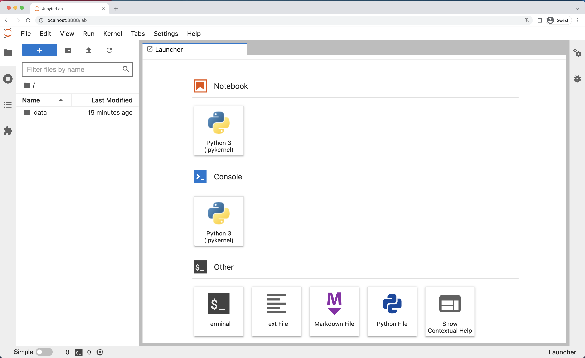
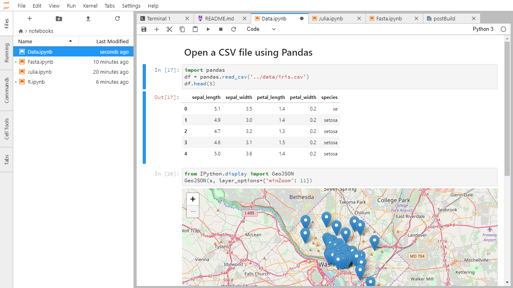
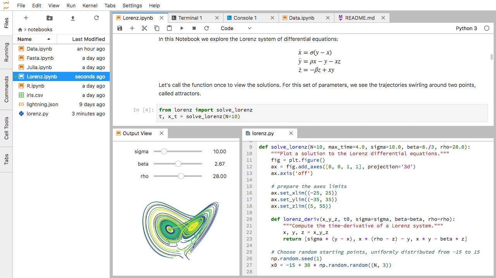
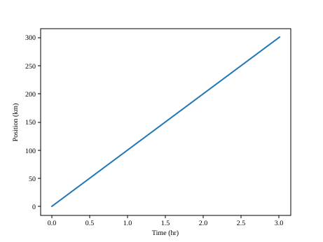
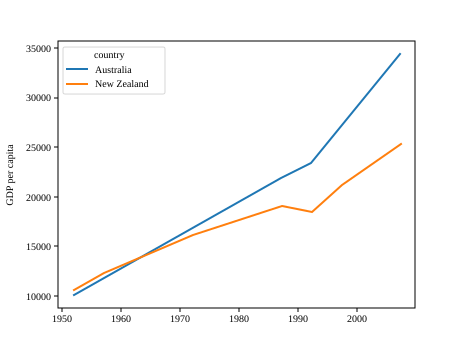

Gapminder 데이터를 이용한 파이썬 초급 실습
소개


이 프로젝트는 프로그래밍 비전공자를 위해 데이터 분석 및 시각화에 중점을 둔 파이썬 입문 과정입니다. 렌더링된 공식 페이지는 https://swcarpentry.github.io/python-novice-gapminder/ 에서 확인할 수 있으며, 강의 자료 형식 및 빌드에 대한 지침은 강의 템플릿 문서를 참고해주세요.
유지보수 담당자:
23 제1장: 실행과 종료
- JupyterLab 서버를 실행합니다.
- 새로운 파이썬 스크립트를 생성합니다.
- Jupyter 노트북을 생성합니다.
- JupyterLab 서버를 종료합니다.
- 파이썬 스크립트와 Jupyter 노트북의 차이점을 이해합니다.
- 노트북에서 마크다운(Markdown) 셀을 생성합니다.
- 노트북에서 파이썬 셀을 생성하고 실행합니다.
- 파이썬 프로그램을 어떻게 실행할 수 있나요?
앞으로 이 워크샵에서는 파이썬을 실행하기 위해 JupyterLab을 통한 [Jupyter Notebooks][jupyter]를 사용할 예정입니다. Jupyter 노트북은 데이터 과학 및 시각화 분야에서 흔히 쓰이며, 파이썬 코드를 대화형으로 실행하여 그 결과를 쉽게 확인하고 공유할 수 있는 편리한 환경을 제공합니다.
코드를 편집하고, 관리하며, 실행하는 다른 방법들도 존재합니다. 소프트웨어 개발자들은 종종 파이썬 프로그램을 만들고 편집할 때 PyCharm이나 Visual Studio Code 같은 통합 개발 환경(IDE), 혹은 Vim이나 Emacs 같은 텍스트 편집기를 사용합니다. 파이썬 프로그램을 편집하고 저장한 뒤에는 IDE 내부나 커맨드 라인에서 직접 해당 프로그램을 실행할 수 있습니다. 반면, Jupyter 노트북은 노트북 안에서 파이썬 코드를 실행하고 그 결과를 즉시 볼 수 있게 해줍니다.
JupyterLab은 그 밖에도 다음과 같은 유용한 기능들을 갖추고 있습니다:
- 코드 블록을 쉽게 타이핑, 편집, 복사, 붙여넣기 할 수 있습니다.
- 탭 자동 완성(Tab complete)을 통해 사용 중인 객체의 이름에 쉽게 접근하고 그에 대해 더 자세히 알아볼 수 있습니다.
- 코드에 링크, 크기가 다른 텍스트, 글머리 기호 등을 추가하여 여러분과 협업자들이 더 쉽게 코드를 이해할 수 있도록 도와줍니다.
- 그림을 생성하는 코드 바로 옆에 출력된 그림을 함께 보여주어, 데이터 분석의 전체 흐름을 한눈에 파악할 수 있게 해줍니다.
각 노트북은 코드가 적힌 셀, 텍스트가 적힌 셀, 또는 이미지가 들어 있는 하나 이상의 셀들로 구성됩니다.
23.1 JupyterLab 시작하기
JupyterLab은 [Project Jupyter][jupyter]에서 만든 웹 사용자 인터페이스를 갖춘 애플리케이션 서버로, 여러 문서와 활동(Jupyter 노트북, 텍스트 편집기, 터미널, 심지어 커스텀 컴포넌트까지)을 유연하고 통합된, 확장 가능한 방식으로 다룰 수 있게 해줍니다. JupyterLab은 비교적 최신 브라우저(이상적으로는 Chrome, Safari, 또는 Firefox의 최신 버전)가 필요합니다. Internet Explorer 9 이하 버전을 비롯한 예전 브라우저는 지원하지 않습니다.
JupyterLab은 Anaconda 파이썬 배포판의 일부로 포함되어 있습니다. Anaconda 배포판을 아직 설치하지 않았다면, 설치 지침을 위해 설정 안내를 참고하세요.
이번 학습에서는 JupyterLab 서버를 로컬 기기에서 직접 실행할 것이므로, Anaconda와 JupyterLab을 다운로드하고 설치하기 위한 최초 연결을 제외하고는 인터넷 연결이 필요하지 않습니다.
- 여러분의 기기에서 JupyterLab 서버를 시작합니다.
- 웹 브라우저를 사용하여 JupyterLab 서버에 연결되는 특수한 localhost URL을 엽니다.
- JupyterLab 서버가 작업을 수행하고, 웹 브라우저가 결과를 렌더링(화면에 표시)합니다.
- 브라우저에 코드를 입력하고, JupyterLab 서버가 코드 실행을 마치면 그 결과를 확인합니다.
JupyterLab은 Jupyter Notebook의 진화된 다음 단계입니다. Jupyter 노트북을 사용해 본 경험이 있다면, JupyterLab에서도 무엇을 기대할 수 있는지 잘 파악할 수 있을 것입니다.
JupyterLab과 Jupyter 노트북 사용자 인터페이스 간의 유사점과 차이점에 대해 더 자세히 알고 싶은 기존 노트북 사용자들은 JupyterLab 인터페이스 문서에서 추가 정보를 확인할 수 있습니다.
23.2 JupyterLab 실행하기
JupyterLab 서버는 커맨드 라인을 통해서, 또는 Anaconda Navigator라는 애플리케이션을 통해서 시작할 수 있습니다. Anaconda Navigator는 Anaconda 파이썬 배포판에 포함되어 있습니다.
23.2.1 macOS - 커맨드 라인(Command Line)
JupyterLab 서버를 시작하려면 터미널(Terminal)을 통해 커맨드 라인에 접근해야 합니다. Mac에서 터미널을 여는 두 가지 방법이 있습니다.
- 응용 프로그램(Applications) 폴더에서 유틸리티(Utilities)를 열고 터미널(Terminal)을 더블 클릭합니다.
- Command + spacebar를 눌러 Spotlight를 실행합니다.
Terminal을 입력한 다음 결과물을 더블 클릭하거나 Enter를 누릅니다.
터미널을 실행한 뒤, JupyterLab 서버를 실행하는 명령어를 입력합니다.
$ jupyter lab23.2.2 Windows 사용자 - 커맨드 라인
JupyterLab 서버를 시작하려면 Anaconda Prompt에 접근해야 합니다.
Windows 로고 키를 누르고 Anaconda Prompt를 검색한 뒤 결과를 클릭하거나 엔터를 누릅니다.
Anaconda Prompt가 실행되면 다음 명령어를 입력합니다:
$ jupyter lab23.2.3 Anaconda Navigator
Anaconda Navigator에서 JupyterLab 서버를 시작하려면 먼저 Anaconda Navigator를 시작해야 합니다(macOS, Windows, 및 Linux에서의 자세한 지침 클릭). macOS에서는 Spotlight(Command + spacebar)를 통해, Windows에서는 검색 기능(Windows 로고 키)을 통해 Anaconda Navigator를 검색하거나, 터미널 셸을 열어 커맨드 라인에서 anaconda-navigator 실행 파일을 실행할 수 있습니다.
Anaconda Navigator를 실행한 후, JupyterLab 항목 아래에 있는 Launch 버튼을 클릭합니다. 해당 버튼을 찾기 위해 화면을 아래로 스크롤해야 할 수도 있습니다.
다음은 macOS와 Windows에서 열렸을 때 보게 될 모습과 유사한 Anaconda Navigator 화면 스크린샷입니다.

다음은 macOS나 Windows에서 JupyterLab 서버를 시작한 후 기본 웹 브라우저에서 열리는 것과 유사한 JupyterLab 진입 화면 스크린샷입니다.

23.3 JupyterLab 인터페이스
JupyterLab은 기존 통합 개발 환경(IDE)에서 볼 수 있는 여러 기능을 제공하지만, 상호작용적이고 탐색적인 컴퓨팅(exploratory computing)에 초점을 맞춰 유연한 구성 요소를 제공하는 데 중점을 두고 있습니다.
JupyterLab 인터페이스는 주요 메뉴 바(Menu Bar), 접을 수 있는 좌측 사이드 바(Left Side Bar), 그리고 문서와 활동들을 위한 탭들로 구성된 메인 작업 공간(Main Work Area)으로 이루어져 있습니다.
23.3.1 메뉴 바 (Menu Bar)
JupyterLab 맨 위쪽에 위치한 메뉴 바는 JupyterLab에서 사용 가능한 여러 동작들(그리고 적용 가능한 경우 단축키)을 제공하는 최상위 메뉴들을 볼 수 있게 해줍니다. 기본적으로 다음과 같은 메뉴가 포함되어 있습니다.
- File(파일): 파일 및 복사본에 관한 동작들 (예: New(새로 만들기), Open(열기), Close(닫기), Save(저장) 등). File 메뉴에는 JupyterLab 서버를 정지시키기 위한 Shut Down(종료) 동작도 포함되어 있습니다.
- Edit(편집): 문서 편집 및 기타 작업에 관한 동작들 (예: Undo(실행 취소), Cut(잘라내기), Copy(복사), Paste(붙여넣기) 등).
- View(보기): JupyterLab의 형태와 외관을 변경하는 동작들.
- Run(실행): 노트북이나 코드 콘솔과 같은 다양한 활동 구역 안에서 코드를 실행하기 위한 동작들.
- Kernel(커널): 커널을 관리하기 위한 동작들. Jupyter 커널에 대해서는 아래에서 자세히 설명할 예정입니다.
- Tabs(탭): 메인 작업 공간에 열려있는 문서와 활동들의 목록.
- Settings(설정): 이 메뉴를 통해 일반적인 JupyterLab 설정을 조정할 수 있습니다. 드롭다운 메뉴에 있는 Advanced Settings Editor(고급 설정 편집기) 옵션을 사용하면 JupyterLab 설정 및 구성 옵션들을 더 정교하게 제어할 수 있습니다.
- Help(도움말): JupyterLab과 커널에 대한 여러 도움말 링크 모음집.
JupyterLab 공식 문서는 커널을 “서버가 코드를 다른 프로그래밍 언어 및 환경에서 실행하기 위해 별도로 시작한 프로세스”로 정의합니다. Jupyter 노트북을 열면, 코드를 실행할 일종의 프로세스인 커널이 시작됩니다. 이번 학습에서는 인터랙티브하게 Python 3 코드를 실행할 수 있도록 하는 Jupyter의 ipython 커널을 사용할 것입니다.
다른 Jupyter용 기타 프로그래밍 언어 커널들을 사용하면 R, Java, Julia, Ruby, JavaScript, Fortran 등과 같이 서로 다른 프로그래밍 언어로 작성된 코드도 동일한 JupyterLab 인터페이스 내에서 작성하고 실행할 수 있습니다.
아래는 기본 상태의 메뉴 바 스크린샷입니다.

23.3.2 좌측 사이드바 (Left Sidebar)
좌측 사이드바에는 파일 브라우저(JupyterLab 서버가 실행된 디렉토리의 내용을 보여줌), 현재 실행 중인 커널 및 터미널의 목록, 명령어 팔레트 탭(Command palette) 및 메인 작업 공간에 열려있는 탭 목록과 같이 일반적으로 사용되는 다양한 기능들이 포함되어 있습니다. 아래는 기본 좌측 사이드바 구조를 보여주는 스크린샷입니다.

View 메뉴에서 “Show Left Sidebar”를 선택하거나 사이드바의 활성 탭 자체를 클릭하면 좌측 사이드바를 접거나(collapse) 펼칠(expand) 수 있습니다.
23.3.3 메인 작업 영역 (Main Work Area)
JupyterLab의 메인 작업 영역을 활용하면 문서(노트북, 텍스트 파일 등)와 다양한 활동(터미널, 코드 콘솔 등)을 크기 조절이나 공간 분할이 가능한 여러 패널 탭들로 정렬해둘 수 있습니다. 기본 메인 작업 영역의 모습은 아래 이미지와 같습니다.
(만약 Launcher 탭이 보이지 않는다면, “File”과 “Edit” 메뉴 아래에 위치한 파란색 십자 기호(+)를 클릭하면 창이 나타납니다.)

탭 하나를 끌어다 탭 패널의 중앙 위치로 드래그하면 해당 탭을 해당 패널 내부로 이동시킵니다. 혹은 패널의 왼쪽, 오른쪽, 위, 아래 부분으로 드래그하면 탭 패널을 여러 화면으로 분할해 보여줍니다. 메인 작업 영역은 현재 활성화된 단일 활동(Current activity)을 가지고 있으며, 이 현재 활동 탭의 경우 위쪽 테두리에 색상이 표시되어(기본설정은 파란색) 찾기 쉽게 만들어져 있습니다.
23.4 파이썬 스크립트 만들기
- 새로운 파이썬 프로그램 작성을 시작하려면 메인 탭(Main Work Area)의 런쳐(Launcher)에서 Other 헤더 아래에 위치한 ‘텍스트 파일(Text File)’ 아이콘을 클릭합니다.
- 메뉴 바의 File 메뉴에서 New -> Text File을 선택해서 평범한 기존 포맷 없는 텍스트 파일(Plain text file)을 만들 수도 있습니다.
- 이렇게 만들어진 텍스트 파일을 파이썬 프로그램용 텍스트 파일로 전환시키려면, 메뉴 바의 File 메뉴 안에서 Save File As…를 선택한 뒤 파일명의 맨 뒷부분 확장자가
.py로 끝나도록 새 파일명을 짓습니다..py확장자는 이렇게 만들어진 텍스트 파일이 파이썬 스크립트 파일이라는 것을 운영체제를 포함한 모두에게 명확하게 알려주는 역할을 합니다.- 이것만으로 엄격한 제한 규약이 생긴다기보다 단순한 관습적 역할입니다.
23.5 Jupyter Notebook 만들기
새 노트북을 열려면 메인 탭 구역 안에 등장하는 Launcher 탭에서 Notebook 헤더 아래 위치한 Python 3 아이콘을 클릭합니다. 이 역시 메뉴 바의 File 메뉴에서 New -> Notebook을 선택해 새 노트북을 만들 수도 있습니다.
Jupyter 노트북에 대한 추가 노트:
- 파이썬 프로그래밍 용 텍스트 파일 파일들과 명확하게 구분하기 위해, 노트북 파일은 그 끝에
.ipynb라는 특수 확장자가 따라붙습니다. - 노트북 파일은 나중에 커맨드 라인을 통해 곧바로 실행 가능하도록 설정된 파이썬 스크립트 포맷(
.py) 형태로 추출/다운로드(Export)될 수도 있습니다.
JupyterLab 내에서 별도 탭으로 실행되고 있는 Jupyter 노트북 화면 예시입니다. 해당 내용과 관련된 추가적인 상세 정보나 특수 기능을 확인하고 싶다면 공식 노트북 문서(Notebook Document)를 참조하시기 바랍니다.

- 노트북 파일의 실제 저장 형식은 JSON이라는 파일 형식(Format) 방식을 따르고 있습니다.
- 일반적인 웹페이지처럼 여러분의 브라우저에서 보는 화면과 그 이면에 저장되는 내부 내용의 생김새는 완전히 다릅니다.
- 그러나 이러한 특성 덕분에 Jupyter는 내부적인 소스코드, 평문 텍스트, 그림 이미지들을 전부 하나의 단일 파일 안에 섞어서 안전하게 혼합 저장할 수 있습니다.
23.6 탭의 패널 분할 배치 연습해보기
JupyterLab 메인 작업 영역(Main Work area)에서는 문서를 여러 탭으로 구성하여 원하는 위치에 배치할 수 있습니다. 공식 문서에 기재된 예제를 한 번 살펴볼까요?

이번에는 텍스트 파일, 파이썬 콘솔, 그리고 터미널 창을 각각 연 다음 메인 작업 공간에 나란히 세 개의 패널로 정렬해 보세요. 그 다음에는 노트북, 터미널, 텍스트 파일을 각각 하나씩 열어 동일하게 세 패널로 나란히 배치해 보세요. 마지막으로 여러분만의 패널 구조를 구성해 보세요. 원활한 작업을 위해서는 어떤 작업 환경과 패널 구조가 가장 편리할 것 같나요?
23.7 해답
새 탭을 연 후 탭의 상단을 다른 패널의 중앙으로 드래그 앤 드롭하면 해당 탭이 그 패널 안으로 이동합니다. 화면을 더 세밀하게 나누고 싶다면 탭을 패널의 왼쪽, 오른쪽, 위쪽 또는 아래쪽 가장자리로 드래그해 보세요.
Jupyter 노트북 환경에서는 코드(Code)와 텍스트(Text)가 각각의 칸으로 나뉘어 있는 것을 볼 수 있습니다. 이렇게 개별적으로 분리된 각각의 칸을 ’셀(cell)’이라고 부릅니다. 보통 프로그래밍 분야에서 “코드”라고 하면 “파이썬과 같은 프로그래밍 언어로 작성된 명령어 모음”을 의미합니다. 즉 노트북 환경에서 “코드 셀(Code cell)”이란 컴퓨터가 이해하고 실행할 수 있는 명령어 구문이 들어가는 공간이며, “텍스트 셀(Text cell)”은 사람이 읽고 쓸 수 있는 일반적인 문서 용도로 사용됩니다.
23.8 Notebook의 ‘명령(Command)’ 모드와 ‘편집(Edit)’ 모드
- 키보드의 Esc 키와 Return(엔터) 키를 번갈아 누르면 선택된 셀의 테두리 색상이 파란색과 회색으로 번갈아 바뀌는 것을 확인할 수 있습니다.
- 이는 노트북의 두 가지 조작 방식인 명령 모드(Command, 테두리 회색) 와 편집 모드(Edit, 테두리 파란색) 를 의미합니다.
- ’명령 모드’는 노트북 레벨에서 셀 전체의 구조 조작을 담당하며, ’편집 모드’는 특정 셀 안에 있는 내용을 직접 수정할 수 있도록 해줍니다.
- 외곽선이 회색인 명령 모드에서 사용할 수 있는 주요 단축키는 다음과 같습니다:
- b 키를 누르면 현재 셀 바로 아래(Below)에 새로운 셀을 삽입합니다.
- a 키를 누르면 현재 셀 바로 위(Above)에 새로운 셀을 삽입합니다.
- x 키를 누르면 현재 선택된 셀을 삭제할 수 있습니다.
- z 키를 누르면 최근의 셀 조작 작업(삭제, 복사, 생성 등)을 실행 취소(되돌리기)합니다.
- 물론 상단 메뉴를 통해서도 모든 작업을 마우스로 할 수 있지만, 단축키를 활용하면 작업 환경을 훨씬 빠르고 편리하게 만들 수 있습니다.
23.9 명령 모드와 편집 모드 사용해보기
현재 여러분의 노트북 창에서 커서가 깜빡이는 파란색 테두리의 편집(Edit) 모드인지, 아니면 회색 테두리의 명령(Command) 모드인지 확인해 보세요. 단축키를 활용하여 다음 동작들을 직접 실행해 보세요. 1) 두 모드를 번갈아 가며 전환해 봅니다. 2) 단축키를 사용하여 빈 셀을 새롭게 생성해 봅니다. 3) 단축키를 사용하여 방금 만든 셀을 바로 삭제해 봅니다. 4) 방금 했던 삭제 작업을 실행 취소하여 셀을 되살려 봅니다.
23.10 해답
명령(Command) 모드는 회색 테두리로 표시되며 단축키를 직접 입력할 수 있는 상태입니다. 편집(Edit) 모드는 파란색 테두리로 표시되며 셀 내부에 텍스트나 코드를 입력할 수 있는 상태입니다. Esc 키와 Return(엔터) 키를 사용하여 모드를 전환할 수 있습니다. 새 셀을 생성하려면 명령 모드 상태여야 합니다(셀이 파란색이라면 Esc를 먼저 누릅니다). 그 다음 b 또는 a를 눌러 셀을 생성합니다. 셀을 삭제할 때도 명령 모드에서 x 키를 누르면 됩니다. 실행을 취소하려면 Esc 상태에서 z 키를 눌러 직전 동작을 되돌릴 수 있습니다.
23.10.1 키보드와 마우스를 번갈아 사용해가며 셀(Cells) 블록을 입력, 변경하기
- 셀에서 Return(엔터) 키를 누르면 테두리가 파란색으로 변하며 텍스트를 입력할 수 있는 편집(Edit) 모드로 전환됩니다.
- 한 파이썬 코드 셀 내에는 여러 줄의 코드가 들어갈 수 있기 때문에, 편집 모드에서 엔터 키를 누르면 코드를 다음 줄로 줄바꿈해 줍니다.
- 따라서 코드를 다음 줄로 넘기는 시점과 코드를 ’실행(run)’하라고 컴퓨터에 지시하는 시점을 구분할 방법이 필요합니다.
- Shift + Return(엔터) 키를 동시에 누르면 노트북은 해당 셀의 코드를 실행하고 그 결과를 보여줍니다.
23.10.2 Markdown을 형식화된(Pretty-printed) 문서로 렌더링하기
- 노트북은 파이썬 연산뿐만 아니라, 마크다운(Markdown) 포맷을 통해 웹페이지나 문서처럼 잘 짜여진 텍스트를 작성할 수 있게 지원합니다!
- 이를 통해 목록 구성을 비롯하여 하이퍼링크, 볼드체, 이탤릭체 등 다양한 서식을 적용할 수 있습니다.
- 명령 모드(회색 테두리 상태)에서 m 키를 누르면 선택된 코드 셀이 파이썬 코드가 아닌 마크다운(Markdown) 문서 렌더링 모드로 전환됩니다.
- 전환되면 셀 왼쪽에 있던
In [ ]:기호가 사라지므로, 해당 셀이 코드를 실행하기 위한 목적이 아니라 문서 작성을 위한 마크다운 셀임을 쉽게 인지할 수 있습니다. - 마크다운 셀로 바뀐 셀을 파이썬 코드 전용 셀로 다시 되돌리려면, 명령(Command) 모드에서 영문 y 키를 입력하면 됩니다.
23.10.3 마크다운(Markdown)은 HTML이 표기할 수 있는 대부분의 시각적 요소를 표현할 수 있습니다.
표(Table) : 아주 기본적인 마크다운 문법과 렌더링된 결과를 비교한 예시입니다.
24 마크다운 원문(Markdown code) |
렌더링된 결과물(Rendered output) | ================================================+ | |
| <p></p> | * 별표 기호를 사용하면 | - 별표 기호를 사용하면 | * 다음과 같은 불릿 리스트가 | - 다음과 같은 불릿 리스트가 * 작성됩니다. | - 작성됩니다. | | | |
||
| <p></p> | 1. 숫자를 순서대로 나열하면 | 1. 숫자를 순서대로 나열하면 | 2. 이렇게 자동으로 정렬된 번호 매기기 | 2. 이렇게 자동으로 정렬된 번호 매기기 | 3. 리스트가 생성됩니다. | 3. 리스트가 생성됩니다. | | | |
||
| <p></p> | * 스페이스 띄어쓰기(indents)를 활용해 | - 스페이스 띄어쓰기(indents)를 활용해 | * 계층을 가지는 구조를 만들거나 | - 계층을 가지는 구조를 만들거나 | * 하위 서브-블록 목록들로 묶이게 | - 하위 서브-블록 목록들로 묶이게 | * 아니면 아예 형태를 구분하여 | - 아니면 아예 형태를 구분하여 | 1. 각기 다른 하위 형태를 조합해 | 1. 각기 다른 하위 형태를 조합해 | 1. 서브 리스트를 구성할 수도 있습니다 | 2. 서브 리스트를 구성할 수도 있습니다 | | | |
||
| <p></p> # 큰 레벨-1 헤딩(Level-1 Heading) | ## 큰 레벨-1 헤딩(Level-1 Heading) | |
24.1 큰 레벨-1 헤딩(Level-1 Heading) | |
|
| <p></p> | ## 한 단계 작은 레벨-2 헤딩 (etc.) | ### 한 단계 작은 레벨-2 헤딩 (etc.) | | | |
||
| <p></p> | 단순 줄 띄움(Line breaks) 같은 경우 | 단순 줄 띄움(Line breaks) 같은 경우 | 그다지 크게 티가 안 나게 렌더링됩니다. | 그다지 크게 티가 안 나게 렌더링됩니다. | | | 하지만 빈 줄(Empty line)을 넣으면 | 하지만 빈 줄(Empty line)을 넣으면 | 완전히 새로운 문단(paragraph)이 시작됩니다.| 완전히 새로운 문단(paragraph)이 시작됩니다. | | | |
||
| <p></p> | [링크 생성](http://software-carpentry.org)| [링크 생성](https://software-carpentry.org) | 은 이 `[...](...)` 형태 규칙으로 작성되거나 | 은 이 `[...](...)` 형태 규칙으로 작성되거나 | [참조 앵커 방식의 링크][data-carp]도 가능. | [참조 앵커 방식의 링크][data_carpentry]도 가능. | | | [data-carp]: http://datacarpentry.org | | | | |
||
24.2 리스트(List) 모양 생성해보기 연습
아래 출력 결과와 같이 중첩(nested)이 들어간 리스트를 마크다운 형태 셀로 직접 한 번 작성해 보세요:
- 펀딩(기금) 예산 확보.
- 본격 작업 진행하기.
- 실험 디자인 스케치.
- 데이터 채집 시작.
- 통계와 분석 확인.
- 분석 기록을 토대로 문안 글 작성하기.
- 모든 최종본을 종합하여 퍼블리시 출판하기.
24.3 해답
이번 과제는 순서가 있는 리스트(Numbered list)와 중첩된 불릿 목록(bullet list) 스타일이 결합된 형태입니다. 중간에 끼여 들어간 불릿 목록들은 ‘2개의 스페이스’ 띄어쓰기를 통해 들여쓰기되어, 상위 번호와 나란히 맞추어진 구조로 구성되어야 합니다.
1. 펀딩(기금) 예산 확보.
2. 본격 작업 진행하기.
* 실험 디자인 스케치.
* 데이터 채집 시작.
* 통계와 분석 확인.
3. 분석 기록을 토대로 문안 글 작성하기.
4. 모든 최종본을 종합하여 퍼블리시 출판하기.24.4 수학 공식 표현식 추가해보기
하나의 파이썬 셀 칸 안에 다양한 수학 연산 명령어들이 함께 나열된 상황 속에서 그것들을 한 번에 실행 처리하게 된다면 화면 어떻게 출력될까요? 아래의 파이썬 코드를 실행할 경우 어떻게 뜰까요?
7 * 3
2 + 124.5 해답
파이썬 노트북 환경의 특징으로, 한 셀 내에서 수많은 연산들이 실행되더라도 코드 상에 별도로 출력 명령이 없었다면 제일 밑의 수식(맨 마지막 줄 계산식)의 결과값만 화면에 출력 결과로 반환 표시됩니다.
324.6 코드(Code)용 셀을 마크다운(Markdown) 형식으로 변경해보기
파이썬 코드 셀에 코드를 입력하다가 중간에 셀 유형을 마크다운 형식으로 변경하면 과연 무슨 일이 일어날까요? 먼저 새로운 전용 코드 입력 셀 구역 안에 아래의 파이썬 코드를 직접 입력해 봅니다:
x = 6 * 7 + 12
print(x)입력 후 Shift + Return(엔터)를 사용하여 그 구간이 코드로 올바르게 작동하는지 결과를 확인합니다. 그다음 해당 셀 영역 바깥 테두리를 선택한 뒤, Esc 로 명령 모드 진입 후 m 단축키를 눌러 셀 유형을 ’마크다운 텍스트 영역’으로 변경시켜준 뒤 다시 Shift + Return(엔터) 키를 눌러 렌더링 해보세요. 어떤 현상이 발생하나요? 또한 왜 이런 셀 단위 성격 변경 기능이 실사용에 있어 유용할 수 있을까요?
24.7 해답
기존 파이썬 코드는 단순한 평문 마크다운 텍스트로서 처리되어 전환됩니다. 줄바꿈 처리가 특별히 적용되지 않았기 때문에 기존 코드 부분은 하나의 연속된 문단으로 길게 연결되어 렌더링되어 나타날 것입니다. 이 방식은 노트북 환경 내부를 다양하게 활용하면서 다목적 코드를 작성해 볼 때, 해당 코드 부분을 전부 지우지 않으면서 일시적으로 실행이 되지 않게 막아두는(주석 처리처럼 온오프 끄듯 멈추게 만드는) 기능으로써 매우 유용할 수 있습니다.
x = 6 * 7 + 12 print(x)24.8 각종 수학 수식 공식(Equations) 표현
기본 마크다운 문법 구성만으로는 복잡한 수학 방정식(Equations) 수식을 책처럼 예쁘게 표시(Render)하는 것이 어렵지만, 특수한 형태의 표현식을 통해 노트북 환경 내에서는 이러한 수식 뷰를 지원하고 있습니다. 신규 마크다운 셀을 하나 생성하고 다음 내용을 입력하거나 복사 후 붙여넣어 보세요:
$\sum_{i=1}^{N} 2^{-i} \approx 1$화면에 어떻게 표시되나요? 밑줄(_) 기호나, 해시 꺽쇠 기호(^), 그리고 달러 마크 기호($)가 노트북 렌더링 엔진 시스템에서 어떤 역할을 수행하고 있을지 고민해 보세요.
24.9 해답
이 특정 노트북 브라우저는 입력된 공식을 LaTeX(라텍스) 수식 방정식 표시 규칙에 맞게 렌더링하여 표시합니다. 시작과 끝에 들어간 달러($) 기호는 이 마크다운 구역 안에 담긴 기호들이 일반 텍스트 문자가 아니라 LaTeX 형식의 특수 수식이라는 점을 시스템 엔진에 알려주는 역할을 합니다. LaTeX 기호 문법에 낯선 분들이라면 참고하십시오: 밑줄(_) 기호는 하단 아래 첨자(subscripts) 용도로 기능하고, 해시 기호(^) 부분은 위로 솟은 제곱수나 윗 첨자 형태(superscripts)를 표기하는 용도로 동작합니다. 또한 여기에 중첩되어 쓰인 중괄호 { 와 }는 묶음 처리 용도로 기능하여, 안쪽에 묶은 서술 문장(i=1)을 통째로 하나의 묶음 취급하게끔 처리합니다. 그 덕에 아랫부분 전체가 하단 첨자로 들어가게 되고 우측의 문자 N 구역과 분리되어 보입니다. 달리 보면 우측의 {-i} 구간 방식도 중괄호를 통해 분리, 숫자 기호 2 위쪽에 함께 놓이는 윗 첨자 표현으로 기능합니다. 마지막으로, \sum 이나 \approx 같은 문구들은 그 자체로 라텍스 구문 언어 내부 전용 특수 표기로 약속된 명령어들입니다. 이로써 합산을 의미하는 커다란 수학 기호 “시그마(sum over)”나, “대략 근사하는 약(approximate)” 이란 의미를 지닌 특수 기호 형태로 화면에 예쁘게 인쇄시켜 표현합니다!
24.10 JupyterLab (주피터 랩) 사용 종료 방식 알아보기
- JupyterLab을 종료하려면 상단의 Menu Bar(메뉴 바)를 사용하여, 왼쪽 첫 번째에 위치한 “File (파일)”을 클릭하고 제일 아래쪽의 “Shut Down (종료)” 메뉴를 클릭합니다. 사용자 보호를 위해 이 작업을 정말로 진행할지 묻는 확인 창이 뜹니다(이전에 여러분의 저장 내역들이 완전히 보존되었는지 꼭 확인하세요!). 팝업에서 “Shut Down (종료할게!)” 문구를 수락 및 클릭하면 JupyterLab 실행 서버 모드가 자체적으로 완전 셧다운되어 종료됩니다.
- 이렇게 작업 환경 서버를 종료시킨 이후 다시 JupyterLab 환경 서버를 구동시켜 접속하셔야 한다면, 처음에 보셨던 터미널(명령 프롬프트 환경 공간) 프로그램으로 돌아가 다음의 짧고 익숙한 코드를 다시 입력하여 실행시키세요.
$ jupyter lab24.11 JupyterLab 껐다 켜기 (종료 시키고 다시 구동해보기 연습)
여러분의 환경에서 JupyterLab 서버를 닫아보신 후 터미널 콘솔 명령어를 통해 다시 한번 깨워 재 구동시켜 보는 실습을 진행하십시오!
- 파이썬 스크립트는 단순한 일반 텍스트 파일(plain text files)입니다.
- 파이썬 코드를 편집하고 실행할 수 있는 여러 도구 중에서 우리는 Jupyter Notebook을 사용합니다.
- Notebook 환경에는 전체 셀 구조 조작을 담당하는 ’Command(명령) 모드’와 셀 안의 내용물을 편집하는 ’Edit(편집) 모드’의 두 가지 조작 방식이 있습니다.
- 키보드 및 마우스 입력을 활용하여 구역 내의 셀들을 다채롭게 클릭 및 선택하고 작업을 이어 나갈 수 있습니다.
- Notebook 내부의 마크다운(Markdown) 영역을 화려하게 시각화(pretty-printed)된 설명 글 문서 형태로 변환시켜줄 수 있습니다.
- 이러한 마크다운 구역 내부에서는 기존 HTML 언어 포맷 구역이 수행할 수 있는 시각적 표기 대부분을 지원하고 있습니다.
25 제2장: 변수와 할당
- 변수에 값을 할당하고 이를 사용하여 계산을 수행하는 프로그램을 작성합니다.
- 프로그램 실행에 따른 변수 값의 변화를 추적합니다.
- 데이터를 어떻게 변수에 저장하고 관리하나요?
25.1 변수를 사용하여 값을 저장합니다.
- 변수(Variables)는 값에 붙이는 이름입니다.
- 변수명 규칙:
- 문자, 숫자, 밑줄(
_)만 포함할 수 있습니다. - 숫자로 시작할 수 없습니다.
- 대소문자를 구분합니다 (
age,Age,AGE는 모두 다른 변수입니다).
- 문자, 숫자, 밑줄(
- 변수 이름은 코드의 의도를 파악할 수 있도록 의미 있게 짓는 것이 좋습니다.
- 파이썬에서
=기호는 오른쪽에 있는 값을 왼쪽에 있는 변수에 할당(대입)한다는 의미입니다.
age = 42
first_name = 'Ahmed'25.2 print를 사용하여 값을 출력합니다.
print()함수는 전달받은 값을 화면에 출력합니다.- 함수를 실행하는 것을 호출(call)한다고 하며, 괄호 안에 전달하는 값을 인수(arguments)라고 합니다.
print(first_name, 'is', age, 'years old')print는 여러 인수를 출력할 때 사이에 공백을 자동으로 추가하며, 출력이 끝나면 줄을 바꿉니다.
25.3 변수는 사용하기 전에 정의되어야 합니다.
- 정의되지 않은 변수를 사용하거나 이름을 잘못 입력하면 파이썬은 오류를 발생시킵니다.
# print(last_name) # NameError 발생Jupyter Notebook에서는 셀의 위치보다 실행된 순서가 중요합니다. 이전에 실행한 셀에서 정의된 변수는 메모리에 유지되어 다른 셀에서도 사용할 수 있습니다. 실행 순서가 꼬여 혼란스러울 때는 Kernel -> Restart & Run All을 사용하여 모든 변수를 초기화하고 처음부터 순서대로 실행해 보는 것이 좋습니다.
25.4 변수를 사용한 계산
- 변수를 마치 실제 값처럼 계산식에 사용할 수 있습니다.
age = age + 3
print('Age in three years:', age)25.5 인덱스(Index)를 이용한 문자 추출
- 문자열 내의 각 문자는 고유한 위치 번호를 가지며, 이를 인덱스(index)라고 합니다.
- 인덱스는 0부터 시작합니다.
- 대괄호
[]안에 인덱스 번호를 넣어 특정 위치의 문자 하나를 가져올 수 있습니다.
atom_name = 'helium'
print(atom_name[0])25.6 슬라이스(Slice)를 이용한 부분 문자열 추출
- 문자열의 일부분을 추출한 것을 부분 문자열(substring)이라고 합니다.
[start:stop]표기법을 사용하여 슬라이싱합니다.start인덱스부터stop인덱스 직전까지의 문자를 가져옵니다.- 슬라이싱을 해도 원본 문자열은 변하지 않으며, 지정된 범위의 복사본을 반환합니다.
atom_name = 'sodium'
print(atom_name[0:3]) # 인덱스 0, 1, 2에 해당하는 'sod' 추출25.7 문자열 길이 확인: len
len()함수는 문자열에 포함된 문자의 총 개수를 반환합니다.
print(len('helium'))25.8 의미 있는 변수명 사용하기
- 파이썬 문법만 지킨다면 어떤 이름이든 가능하지만, 자신과 동료가 코드를 쉽게 이해할 수 있도록 명확한 이름을 사용해야 합니다.
# 좋지 않은 예
flabadab = 42
# 좋은 예
age = 4225.9 두 변수의 값 맞교환(swap)하기
다음 코드가 실행됨에 따라 변수 x와 y의 값이 어떻게 변하는지 추적해 보세요.
#| eval: false
x = 1.0
y = 3.0
swap = x
x = y
y = swap최종적으로 x는 3.0, y는 1.0이 됩니다. swap이라는 임시 변수를 사용하여 두 값을 성공적으로 맞교환했습니다.
25.10 결과 예측하기
다음 코드를 실행했을 때 position 변수의 최종값은 무엇일까요?
#| eval: false
initial = 'left'
position = initial
initial = 'right''left'입니다. position = initial이 실행될 당시의 initial 값인 'left'가 복사되어 할당되었기 때문입니다. 이후 initial 값이 바뀌어도 position에는 영향을 주지 않습니다.
25.11 슬라이싱 연습
species_name = "Acacia buxifolia"일 때 다음 결과는 무엇일까요?
species_name[2:8]species_name[11:]species_name[:4]species_name[:]
'acia b''folia'(끝까지)'Acac'(처음부터)'Acacia buxifolia'(전체 복사)
- 변수를 사용하여 데이터를 저장하고 이름을 붙입니다.
print()함수로 데이터를 출력하고len()으로 길이를 확인합니다.- 인덱싱과 슬라이싱을 통해 문자열의 일부를 추출할 수 있습니다.
- 변수 이름은 대소문자를 구분하며, 의미 있는 이름을 사용하는 것이 권장됩니다.
26 제3장: 데이터 타입과 타입 변환
- 정수와 부동소수점 숫자의 주요 차이점을 설명합니다.
- 숫자와 문자열의 차이점을 이해합니다.
- 내장 함수를 사용하여 데이터 타입을 변환합니다.
- 파이썬은 어떤 종류의 데이터를 저장하나요?
- 한 데이터 타입을 다른 타입으로 어떻게 변환하나요?
26.1 모든 값에는 타입(Type)이 있습니다.
- 파이썬의 모든 값은 특정한 데이터 타입을 가집니다.
- 정수 (
int):3,-512와 같이 소수점이 없는 숫자입니다. - 부동소수점 숫자 (
float):3.14,-2.5와 같이 소수점이 포함된 숫자입니다. - 문자열 (
str): 텍스트 데이터입니다. 작은따옴표나 큰따옴표로 감싸서 작성합니다.
26.2 type() 함수를 사용한 타입 확인
- 값이나 변수의 데이터 타입을 알고 싶을 때는
type()함수를 사용합니다.
print(type(52))
fitness = 'average'
print(type(fitness))26.3 타입에 따른 연산의 제한
- 데이터 타입에 따라 수행할 수 있는 작업이 달라집니다.
print(5 - 3)
# print('hello' - 'h') # TypeError 발생: 문자열 간의 뺄셈은 지원하지 않음26.4 문자열의 특수 연산
+연산자: 두 문자열을 하나로 이어 붙입니다(concatenation).*연산자: 문자열을 정수 횟수만큼 반복합니다.
full_name = 'Ahmed' + ' ' + 'Walsh'
print(full_name)
print('=' * 10)26.5 문자열의 길이와 숫자 데이터
len()함수는 문자열의 길이를 반환하지만, 숫자 데이터(int, float)에는 적용할 수 없습니다.
print(len(full_name))
# print(len(52)) # TypeError 발생26.6 데이터 타입 변환
- 서로 다른 타입(예: 숫자와 문자열)을 직접 더하면 오류가 발생합니다.
str(),int(),float()함수를 사용하여 명시적으로 타입을 변환해야 합니다.
print(1 + int('2'))
print(str(1) + '2')26.7 정수와 부동소수점 숫자의 혼용
- 정수형과 부동소수점형을 함께 계산하면, 파이썬은 결과를 자동으로 부동소수점형으로 변환합니다.
print('half is', 1 / 2.0)
print('three squared is', 3.0 ** 2)26.8 데이터 타입 선택하기
다음 상황을 표현하기 위해 어떤 데이터 타입(정수, 부동소수점 숫자, 문자열)이 적절할까요?
- 올해의 총 경과 일수 (예: 100일)
- 정밀한 시간 측정값 (예: 1.5일)
- 장비 일련번호 (예: “SN-1234”)
- 한 도시의 현재 인구수 (예: 500000)
- 도시의 평균 인구수 변화 추세
- 정수 (int)
- 부동소수점 숫자 (float)
- 문자열 (str)
- 정수 (int)
- 부동소수점 숫자 (float)
26.9 나눗셈 연산자
파이썬 3에는 세 가지 나눗셈 관련 연산자가 있습니다.
/: 부동소수점 나눗셈 (결과가 float)//: 정수 나눗셈 (몫만 반환)%: 나머지 연산 (나머지만 반환)
참가자 수(num_subjects)가 600명이고, 설문지 한 장당 최대 인원(num_per_survey)이 42명일 때, 모든 인원을 조사하기 위해 필요한 최소 설문지 수를 구하는 식을 작성해 보세요.
#| eval: false
num_subjects = 600
num_per_survey = 42
# 올림 계산을 위한 간단한 공식
num_surveys = (num_subjects + num_per_survey - 1) // num_per_survey
print(num_surveys)26.10 타입 변환 오류
int("3.4")를 실행하면 왜 오류가 발생할까요? 어떻게 해결할 수 있을까요?
int()는 소수점이 포함된 문자열을 직접 정수로 변환하지 못합니다. 먼저 float()로 변환한 뒤 int()를 적용해야 합니다. int(float("3.4"))
- 모든 값은 타입을 가지며, 타입에 따라 가능한 연산이 결정됩니다.
int,float,str간의 변환을 위해 명시적인 형변환 함수를 사용합니다.- 숫자와 문자열을 섞어서 연산할 때는 반드시 타입을 맞춰주어야 합니다.
27 제4장: 내장 함수와 도움말
- 함수의 목적을 설명할 수 있습니다.
- 파이썬 내장 함수를 호출하는 방법을 익힙니다.
- 함수 호출을 중첩하여 사용하는 방법을 이해합니다.
- 도움말(help) 기능을 사용하여 내장 함수의 문서를 조회합니다.
- SyntaxError와 NameError의 차이점을 파악하고 해결 방법을 익힙니다.
- 내장 함수는 어떻게 사용하나요?
- 함수의 동작 방식을 어떻게 확인할 수 있나요?
- 프로그래밍 중에 발생하는 오류에는 어떤 것들이 있나요?
27.1 주석(Comments)을 활용한 코드 설명
# 이 문장은 파이썬에 의해 실행되지 않습니다.
adjustment = 0.5 # '#' 기호 뒤의 내용은 실행 시 무시됩니다.27.2 함수의 인수(Arguments)
- 함수에 전달하는 값을 인수(Argument)라고 합니다.
len함수는 정확히 하나의 인수를 받습니다.int,str,float함수는 데이터의 형식을 변환하여 새로운 값을 반환합니다.print함수는 인수가 없어도 실행되며, 여러 개의 인수를 동시에 받을 수도 있습니다.- 인수가 없더라도 함수를 호출할 때는 반드시 소괄호(
())를 붙여야 파이썬이 이를 함수 호출로 인식합니다.
print('before')
print()
print('after')27.3 함수의 반환값(Return Value)
- 모든 함수는 실행 후 결과를 반환합니다.
- 명시적인 반환값이 없는 함수는 파이썬의 특수 객체인
None을 반환합니다.None은 ’값이 없음’을 나타냅니다.
result = print('example')
print('result of print is', result)27.4 주요 내장 함수: max, min, round
max: 주어진 값들 중 최댓값을 찾습니다.min: 주어진 값들 중 최솟값을 찾습니다.- 숫자뿐만 아니라 문자열(사전순 기준)에서도 작동합니다.
print(max(1, 2, 3))
print(min('a', 'A', '0'))27.5 인수의 타입 제한
max와min은 최소 하나 이상의 인수가 필요하며, 서로 비교 가능한 타입의 인수가 전달되어야 합니다. 그렇지 않으면 오류가 발생합니다.
# print(max(1, 'a')) # TypeError 발생27.6 인수의 기본값(Default values)
- 일부 함수는 인수를 생략할 경우 사용하는 기본값이 정해져 있습니다.
- 예를 들어
round함수는 두 번째 인수를 생략하면 소수점 첫째 자리에서 반올림하여 정수를 반환합니다.
print(round(3.712))
print(round(3.712, 1))27.7 메서드(Methods)
- 특정 객체에 속해 있는 함수를 메서드(Method)라고 부릅니다.
- 객체 이름 뒤에 점(
.)을 찍고 호출합니다.
my_string = 'Hello world!'
print(len(my_string)) # 일반 함수 호출
print(my_string.swapcase()) # 메서드 호출- 여러 메서드를 이어서 호출하는 메서드 체이닝(Method Chaining)도 가능합니다.
print(my_string.upper().isupper())27.8 도움말 확인하기: help
help()함수를 사용하여 내장 함수의 상세 문서를 확인할 수 있습니다.
help(round)- Jupyter Notebook에서는 함수 이름 뒤에
?를 붙여 실행하거나, 함수 이름에서Shift + Tab을 눌러 도움말을 볼 수 있습니다.
27.9 구문 오류 (Syntax Error)
- 파이썬 문법에 맞지 않게 코드를 작성했을 때 발생하며, 이 경우 코드는 실행되지 않습니다.
# name = 'Feng # 닫는 따옴표 누락
# age == 52 # 할당 시 등호 중복 (비교 연산자로 오해될 수 있음)27.10 실행 오류 (Runtime Error)
- 문법은 맞지만 실행 도중에 발생하는 오류입니다. 대표적으로 정의되지 않은 변수를 사용할 때 발생하는
NameError가 있습니다.
age = 53
# remaining = 100 - aege # 오타로 인한 NameError 발생27.11 코딩 문제 해결을 위한 도움 받기
코딩 중에 오류가 발생하거나 막막할 때는 다음과 같은 방법을 활용할 수 있습니다.
- 검색 엔진 활용: 에러 메시지의 마지막 줄을 복사하여 검색해 보세요. Stack Overflow와 같은 커뮤니티에서 많은 도움을 얻을 수 있습니다. 단, 해결책을 이해하지 못한 채 복사하여 붙여넣는 것은 피해야 합니다.
- 동료에게 질문하기: 문제를 명확히 정리하여 주변에 조언을 구하세요.
- 고무 오리 디버깅: 코드의 작동 방식을 소리 내어 설명하다 보면 스스로 해결책을 찾는 경우가 많습니다.
27.11.1 생성형 AI 활용 가이드
최근에는 ChatGPT와 같은 생성형 AI를 활용하여 코딩 도움을 받는 경우가 많아지고 있습니다. 에러 메시지를 입력하면 즉각적인 해결책을 제안받을 수 있어 편리하지만, 다음과 같은 주의사항을 숙지해야 합니다.
- 작동 원리의 이해: 생성형 AI는 실제 추론을 하는 것이 아니라, 학습된 방대한 데이터를 바탕으로 확률적으로 가장 적절해 보이는 답변을 생성합니다. 따라서 답변이 논리적으로 완벽하지 않거나 틀린 정보를 정답처럼 제시할 수 있습니다(환각 현상).
- 검증의 필요성: AI가 제공한 코드는 반드시 사용자가 직접 검토하고 테스트해야 합니다. 기초 지식이 부족한 상태에서 AI에만 의존하면 문제 해결 능력을 기르기 어려워집니다.
- 윤리적 및 환경적 고려: AI 모델 학습과 운영에는 막대한 전력과 자원이 소비됩니다. 또한 데이터 저작권이나 투명성 문제에 대해서도 지속적인 논의가 이루어지고 있습니다.
학습 과정에서의 권장 사항: 이 워크숍 기간 동안은 가급적 AI 도구에 의존하기보다 직접 문제를 해결해 보시길 권장합니다. 1. 입문 단계의 오류는 웹 검색만으로도 충분히 해결 가능한 경우가 많습니다. 2. 직접 오류를 수정하며 쌓은 기초 지식은 나중에 AI가 생성한 코드가 안전하고 정확한지 판단할 수 있는 중요한 기준이 됩니다. 3. 스스로 고민하고 해결하는 과정 자체가 프로그래밍 실력을 향상시키는 가장 확실한 방법입니다.
27.12 실행 순서 파악하기
- 다음 연산이 수행되는 순서를 설명해 보세요.
- 연산 종료 후
radiance변수의 최종값은 무엇인가요?
#| eval: false
radiance = 1.0
radiance = max(2.1, 2.0 + min(radiance, 1.1 * radiance - 0.5))순서: 1.1 * radiance (1.1) → 1.1 - 0.5 (0.6) → min(1.0, 0.6) (0.6) → 2.0 + 0.6 (2.6) → max(2.1, 2.6) (2.6) 최종값: 2.6
27.13 데이터 타입과 함수
다음 코드의 결과를 예측해 보고, max(len(rich), poor)와 같이 실행했을 때 어떤 일이 벌어질지 생각해 보세요.
#| eval: false
easy_string = "abc"
print(max(easy_string))
rich = "gold"
poor = "tin"
print(max(rich, poor))
print(max(len(rich), len(poor)))max(len(rich), poor)는 max(4, 'tin')이 되어 정수와 문자열을 비교할 수 없으므로 TypeError가 발생합니다.
- 주석을 사용하여 코드에 대한 설명을 남길 수 있습니다.
- 함수는 인수를 전달받아 작업을 수행하고 결과를 반환합니다.
max,min,round등 다양한 내장 함수가 제공됩니다.- 도움말 기능을 통해 함수의 상세 사용법을 확인할 수 있습니다.
- 구문 오류(Syntax Error)와 실행 오류(Runtime Error)의 차이를 이해하고 메시지를 통해 문제를 해결합니다.
28 제5장: 쉬는 시간
28.1 생각해 보기
커피를 마시며 다음 질문들에 대해 자유롭게 이야기해 보세요.
- 지금까지 배운 내용 중 파이썬에서 발생하는 에러에는 어떤 종류가 있었나요?
- 작성한 코드가 예상과 다르게 동작한 적이 있었나요? 원인이 무엇이었나요?
- 코드를 작성할 때 실수를 줄이거나 에러를 방지하기 위해 어떤 방법을 쓰면 좋을까요?
29 제6장: 라이브러리 (Libraries)
- 소프트웨어 라이브러리의 개념과 필요성을 이해합니다.
- 파이썬 표준 라이브러리의 모듈을 임포트(import)하여 사용하는 프로그램을 작성합니다.
- 대화형 인터프리터나 온라인 문서를 통해 라이브러리 사용법을 확인합니다.
- 외부에서 미리 작성된 기능을 어떻게 가져와서 사용할 수 있나요?
- 특정 라이브러리가 제공하는 기능을 어떻게 확인할 수 있나요?
29.1 라이브러리의 중요성
- 라이브러리(library)란 다른 프로그램에서 재사용할 수 있도록 미리 작성된 함수와 값들의 모음(모듈)입니다.
- 파이썬 설치 시 기본으로 제공되는 표준 라이브러리(standard library) 외에도, PyPI(Python Package Index)를 통해 수많은 외부 라이브러리를 설치하여 사용할 수 있습니다.
29.2 모듈 임포트 (Import)
import명령어를 사용하여 라이브러리를 프로그램으로 불러옵니다.- 불러온 후에는
모듈명.기능명형식으로 사용합니다.
import math
print('pi is', math.pi)
print('cos(pi) is', math.cos(math.pi))- 점(
.)은 해당 모듈에 소속된 요소를 지칭할 때 사용합니다.
29.3 도움말 확인: help
- 모듈의 상세 설명과 사용법을 확인하려면
help()함수를 사용합니다.
help(math)29.4 특정 항목만 선택하여 임포트하기
from ... import ...구문을 사용하면 모듈 이름을 생략하고 특정 기능만 직접 사용할 수 있습니다.
from math import cos, pi
print('cos(pi) is', cos(pi))29.5 별칭(Alias) 사용하기
import ... as ...를 사용하여 모듈 이름을 짧게 줄여서 부를 수 있습니다.
import math as m
print('cos(pi) is', m.cos(m.pi))matplotlib.pyplot을plt로,pandas를pd로 부르는 것처럼 커뮤니티에서 통용되는 관습적인 별칭을 사용하는 것이 좋습니다.
29.6 Math 모듈 탐구
math.sqrt()함수를 사용하지 않고 제곱근을 구하는 다른 방법은 무엇인가요?- 굳이
sqrt()함수가 별도로 존재하는 이유는 무엇일까요?
math.pow(x, 0.5)를 사용하면 동일한 결과를 얻을 수 있습니다.sqrt(x)가 수식의 의도를 더 직관적으로 보여주며 가독성이 높기 때문입니다. 또한 파이썬이 기반을 둔 C 언어 표준 라이브러리의 구성을 따랐기 때문이기도 합니다.
29.7 무작위 문자 선택
유전자 서열 문자열 bases = 'ACTTGCTTGAC'에서 무작위로 문자 하나를 선택하는 코드를 작성해 보세요.
random 모듈의 choice 함수를 사용하는 것이 가장 간단합니다.
#| eval: false
import random
bases = 'ACTTGCTTGAC'
print(random.choice(bases))29.8 임포트 방식 선택하기
import math와 from math import *의 차이점은 무엇이며, 왜 후자의 사용을 지양해야 할까요?
import *는 모듈의 모든 기능을 현재 프로그램의 이름 공간으로 가져옵니다. 이는 편리해 보일 수 있지만, 기존에 정의한 변수나 함수 이름과 충돌할 위험이 크고 코드의 출처를 파악하기 어렵게 만듭니다. 따라서 필요한 기능만 명시적으로 임포트하는 것이 권장됩니다.
29.9 에러 메시지 분석
math.log(0)을 실행했을 때 발생하는 에러의 종류와 의미는 무엇인가요?
ValueError: math domain error가 발생합니다. 이는 로그 함수의 수학적 정의 범위를 벗어난 값이 인수로 전달되었음을 의미합니다.
- 라이브러리는 프로그램 개발 효율을 높여주는 미리 작성된 코드 묶음입니다.
import를 통해 모듈을 불러오며,from이나as키워드로 사용 방식을 조정할 수 있습니다.help()를 통해 라이브러리 사용법을 수시로 확인하는 습관을 들이세요.
30 제7장: 데이터를 데이터프레임으로 읽어오기
- Pandas 라이브러리를 임포트(import)합니다.
- Pandas를 사용하여 CSV 데이터 파일을 불러옵니다.
- Pandas 데이터프레임의 기본 구조와 정보를 파악합니다.
- 표 형태의 데이터를 어떻게 효율적으로 읽고 확인할 수 있나요?
30.1 표 데이터 분석을 위한 Pandas 라이브러리
- Pandas는 파이썬에서 표 형태의 데이터를 다루는 데 가장 널리 쓰이는 라이브러리입니다.
- 행(row)과 열(column)로 구성된 2차원 표 구조인 데이터프레임(DataFrame)을 제공합니다.
import pandas as pd와 같이 관습적으로pd라는 별칭을 사용하여 로드합니다.pd.read_csv()함수를 사용하여 CSV 파일을 읽고 데이터프레임 객체로 변환합니다.
import pandas as pd
data_oceania = pd.read_csv('data/gapminder_gdp_oceania.csv')
print(data_oceania)- 데이터프레임에서 열은 변수(variables), 행은 개별 관측치(observations)를 나타냅니다.
- 데이터프레임의 이름을 지을 때는 데이터의 출처나 특징이 드러나도록 명확하게 짓는 것이 관리에 도움이 됩니다.
데이터 파일이 data 폴더 안에 있다면 경로에 반드시 data/를 포함해야 합니다. 경로가 틀리면 파일을 찾을 수 없다는 FileNotFoundError가 발생합니다.
30.2 인덱스 열 지정: index_col
- 기본적으로 행 번호(0, 1, 2…)가 인덱스로 사용되지만, 특정 열을 행의 제목(인덱스)으로 지정할 수 있습니다.
read_csv()함수의index_col매개변수에 열 이름을 전달합니다.
data_oceania_country = pd.read_csv('data/gapminder_gdp_oceania.csv', index_col='country')
print(data_oceania_country)30.3 데이터프레임 정보 확인: info()
info()메서드를 사용하면 데이터의 타입, 행과 열의 개수, 메모리 사용량 등을 한눈에 볼 수 있습니다.
data_oceania_country.info()30.4 열 정보 확인: columns
DataFrame.columns는 데이터프레임의 열 이름을 담고 있는 속성(멤버 변수)입니다. 함수가 아니므로 괄호()를 붙이지 않습니다.
print(data_oceania_country.columns)30.5 데이터프레임 전치: T
- 행과 열을 서로 바꾸고 싶을 때
.T속성을 사용합니다. 실제 데이터를 복사하지 않고 보여주는 방식만 바꿉니다.
print(data_oceania_country.T)30.6 요약 통계 확인: describe()
describe()메서드는 숫자형 데이터를 가진 열에 대해 개수, 평균, 표준편차, 최솟값, 최댓값 등의 요약 통계를 제공합니다.
print(data_oceania_country.describe())30.7 데이터 읽기 및 확인
data/gapminder_gdp_americas.csv 파일을 읽어 data_americas 변수에 저장하고, 국가명을 인덱스로 지정한 뒤 요약 통계를 확인해 보세요.
#| eval: false
data_americas = pd.read_csv('data/gapminder_gdp_americas.csv', index_col='country')
print(data_americas.describe())30.8 처음과 마지막 데이터 보기
head(n)와 tail(n) 메서드를 사용하여 데이터의 일부분을 확인할 수 있습니다.
- 아메리카 데이터의 처음 3개 행을 출력해 보세요.
- 아메리카 데이터의 마지막 3개 열을 출력해 보세요. (힌트: 전치
T활용)
data_americas.head(3)data_americas.T.tail(3).T(행과 열을 바꾼 뒤 마지막 3행을 추출하고 다시 원래대로 뒤집습니다.)
- Pandas를 사용하여 표 형태의 데이터를 쉽게 읽고 관리할 수 있습니다.
read_csv()로 파일을 불러오고index_col로 인덱스를 지정합니다.info(),describe(),head(),tail()등을 사용하여 데이터의 구조와 내용을 빠르게 파악합니다..T속성으로 행과 열을 바꿀 수 있습니다.
31 제8장: Pandas 데이터프레임
- Pandas 데이터프레임에서 특정 위치나 레이블을 사용하여 값을 선택할 수 있습니다.
- 데이터프레임의 행과 열을 슬라이싱하여 부분집합(subset)을 추출할 수 있습니다.
- 불리언(Boolean) 조건을 활용하여 특정 조건에 맞는 데이터를 필터링할 수 있습니다.
- 표 형태의 데이터를 어떻게 효율적으로 선택하고 분석할 수 있나요?
31.1 Pandas 데이터프레임(DataFrame)과 시리즈(Series)
- 데이터프레임(DataFrame)은 Pandas에서 표(table) 형태의 데이터를 다루는 기본 구조입니다.
- 시리즈(Series)는 데이터프레임의 각 열(column)을 나타내는 1차원 데이터 구조입니다.
- Pandas는 Numpy 라이브러리를 기반으로 구축되어 강력한 수치 계산 능력을 제공하며, 인덱싱, 누락된 데이터 처리, 데이터 병합 등 데이터 분석에 최적화된 기능을 제공합니다.
31.2 데이터 선택하기
데이터프레임에서 특정 위치의 값을 선택할 때는 두 가지 방법을 주로 사용합니다.
- 위치 기반 선택 (
iloc): 행과 열의 정수 인덱스(0, 1, 2…)를 사용하여 선택합니다. - 레이블 기반 선택 (
loc): 행 인덱스 이름과 열 이름을 사용하여 선택합니다.
31.2.1 위치 기반 선택: iloc
import pandas as pd
data = pd.read_csv('data/gapminder_gdp_europe.csv', index_col='country')
print(data.iloc[0, 0]) # 첫 번째 행, 첫 번째 열의 값 선택31.2.2 레이블 기반 선택: loc
print(data.loc["Albania", "gdpPercap_1952"]) # 'Albania' 행, 'gdpPercap_1952' 열의 값 선택31.3 행과 열 슬라이싱
:을 사용하면 해당 축의 모든 데이터를 선택합니다.
print(data.loc["Albania", :]) # 'Albania' 행의 모든 열 선택
print(data.loc[:, "gdpPercap_1952"]) # 'gdpPercap_1952' 열의 모든 행 선택- 레이블을 사용하여 일정 범위를 슬라이싱할 수 있습니다.
loc슬라이싱은 마지막 레이블을 포함한다는 점에 유의하세요.
# 'Italy'부터 'Poland'까지의 행과 1962년부터 1972년까지의 열 선택
subset = data.loc['Italy':'Poland', 'gdpPercap_1962':'gdpPercap_1972']
print(subset)31.4 조건부 필터링 (Boolean Masking)
- 비교 연산자를 사용하면 데이터프레임의 각 요소에 대해 조건을 검사하고
True/False로 구성된 마스크를 생성합니다.
mask = subset > 10000
print(mask)- 이 마스크를 원본 데이터프레임에 적용하면 조건에 맞는 값만 추출할 수 있습니다. 조건에 맞지 않는 위치는
NaN(Not a Number, 결측치)으로 표시됩니다.
print(subset[mask])31.5 그룹화(Group By)
groupby를 사용하면 특정 기준에 따라 데이터를 나누고, 각 그룹에 대해 통계량을 계산한 뒤 다시 결합하는 분석을 수행할 수 있습니다.
# 전체 평균보다 높은지 여부를 기준으로 그룹화하여 합계 계산
mask_higher = data > data.mean()
wealth_score = mask_higher.aggregate('sum', axis=1) / len(data.columns)
print(data.groupby(wealth_score).sum())31.6 데이터 선택 연습
data_europe에서 ‘Serbia’ 국가의 ’2007년 1인당 GDP’를 선택하는 코드를 작성하세요.iloc[0:2, 0:2]와loc['Albania':'Belgium', '1952':'1962']의 결과 차이를 설명해 보세요.
data_europe.loc['Serbia', 'gdpPercap_2007']iloc은 마지막 인덱스를 포함하지 않지만,loc은 마지막 레이블을 결과에 포함합니다.
31.7 데이터 정제하기
다음 코드의 각 줄이 수행하는 작업을 설명해 보세요.
#| eval: false
first = pd.read_csv('data/gapminder_all.csv', index_col='country')
second = first[first['continent'] == 'Americas']
third = second.drop('Puerto Rico')
fourth = third.drop('continent', axis = 1)
fourth.to_csv('result.csv')read_csv: 데이터를 읽어옵니다.first[...]: 대륙이 ’Americas’인 행만 필터링합니다.drop('Puerto Rico'): 특정 행을 삭제합니다.drop(..., axis=1): 특정 열을 삭제합니다.to_csv: 결과를 파일로 저장합니다.
31.8 메서드 찾아보기
dir(data)를 사용하여 데이터프레임에서 사용할 수 있는 메서드 목록을 확인해 보세요. 그중 중앙값을 계산하는 메서드는 무엇인가요?
중앙값을 계산하는 메서드는 median()입니다. data.median()으로 사용할 수 있습니다.
31.9 데이터 해석의 유의점
국경선이나 영토가 시간에 따라 변하는 국가(예: 폴란드)의 장기적인 GDP 데이터를 분석할 때 발생할 수 있는 문제점은 무엇일까요? 이를 해결하기 위해 어떤 고려가 필요할까요?
영토 변화는 인구와 경제 규모에 직접적인 영향을 미치므로 단순 수치 비교는 왜곡될 수 있습니다. 분석 시 역사적 맥락을 고려하거나, 1인당 GDP와 같은 상대적 지표를 활용하고 데이터의 한계를 명시해야 합니다.
iloc은 위치(정수)를 기준으로,loc은 레이블(이름)을 기준으로 데이터를 선택합니다.:를 사용하여 전체 범위를 지정하거나 슬라이싱을 수행할 수 있습니다.- 불리언 마스크를 사용하여 특정 조건에 맞는 데이터만 필터링할 수 있습니다.
NaN은 데이터가 없음을 나타내며, 통계 연산 시 자동으로 제외되는 경우가 많습니다.groupby를 활용하면 데이터를 그룹별로 나누어 분석할 수 있습니다.
32 제9장: 그래프 그리기 (Plotting)
- 단일 데이터 세트를 나타내는 시계열 그래프(time series plot)를 생성할 수 있습니다.
- 두 데이터 세트 간의 상관관계를 보여주는 산점도(scatter plot)를 생성할 수 있습니다.
- 데이터를 어떻게 그래프로 시각화할 수 있나요?
- 생성한 그래프를 어떻게 파일로 저장할 수 있나요?
32.1 파이썬에서 가장 널리 사용되는 시각화 라이브러리는 matplotlib 입니다.
- 주로 하위 라이브러리인
matplotlib.pyplot모듈을 사용합니다. - Jupyter Notebook 환경은 코드 셀 아래에 그래프를 직접 렌더링하여 보여줍니다.
import matplotlib.pyplot as plt- 기초적인 그래프는 다음과 같이 간단하게 생성할 수 있습니다.
time = [0, 1, 2, 3]
position = [0, 100, 200, 300]
plt.plot(time, position)
plt.xlabel('Time (hr)')
plt.ylabel('Position (km)')
Jupyter Notebook 환경에서는 그래프 생성 코드를 실행하면 결과가 자동으로 출력되고 노트북 파일에 저장됩니다. 하지만 대화형 파이썬 세션이나 스크립트 실행 환경에서는 그래프를 화면에 띄우기 위해 별도의 명령어가 필요합니다.
생성한 그래프를 화면에 나타내려면 다음 명령어를 사용합니다:
plt.show()이 명령어는 Jupyter Notebook에서도 한 셀에서 여러 그래프를 별도로 확인하고 싶을 때 유용합니다.
32.2 Pandas dataframe에서 직접 그래프를 그릴 수 있습니다.
- Pandas 데이터프레임 객체를 사용하여 편리하게 그래프를 그릴 수 있습니다.
- 먼저, 문자열로 되어 있는 열 이름을 숫자로 변환하는 작업이 필요할 수 있습니다. 예를 들어,
gdpPercap_접두어를 제거하고 남은 연도 문자열을 정수형으로 변환해 보겠습니다.
import pandas as pd
data = pd.read_csv('data/gapminder_gdp_oceania.csv', index_col='country')
# 열 이름에서 연도 정보만 추출합니다 (예: 'gdpPercap_1952' -> '1952')
years = data.columns.str.replace('gdpPercap_', '')
# 연도를 정수형으로 변환하여 열 이름으로 재설정합니다.
data.columns = years.astype(int)
# 호주(Australia) 데이터를 그래프로 그립니다.
data.loc['Australia'].plot()
32.3 데이터 선택 및 변형 후 그래프 그리기
- 기본적으로
DataFrame.plot()함수는 각 행(row)을 x축의 단위로 사용합니다. - 여러 국가의 데이터를 연도별로 비교하려면 데이터를 전치(transpose)하여 행과 열을 바꾼 뒤 그리는 것이 좋습니다.
data.T.plot()
plt.ylabel('GDP per capita')
32.4 다양한 그래프 스타일 옵션
plt.style.use()를 사용하여 그래프의 테마를 변경하거나,kind='bar'옵션으로 막대 그래프를 그릴 수 있습니다.
plt.style.use('ggplot')
data.T.plot(kind='bar')
plt.ylabel('GDP per capita')
32.5 matplotlib 함수 직접 호출하기
- 가장 기본적인 명령어는
plt.plot(x, y)입니다. - 마커 색상이나 선 스타일 등을 지정할 수 있습니다. 예를 들어
'b-'는 파란색 실선,'g--'는 녹색 점선을 의미합니다.
years = data.columns
gdp_australia = data.loc['Australia']
plt.plot(years, gdp_australia, 'g--')32.6 여러 데이터 세트 함께 그리기 및 범례 추가
gdp_australia = data.loc['Australia']
gdp_nz = data.loc['New Zealand']
plt.plot(years, gdp_australia, 'b-', label='Australia')
plt.plot(years, gdp_nz, 'g-', label='New Zealand')
# 범례 추가
plt.legend(loc='upper left')
plt.xlabel('Year')
plt.ylabel('GDP per capita ($)')여러 데이터를 겹쳐 그릴 때는 각 선이 무엇을 의미하는지 범례를 통해 설명하는 것이 좋습니다.
- 그래프를 그릴 때
label인자로 이름을 지정합니다. plt.legend()를 호출하여 범례를 표시합니다.
loc 매개변수를 사용하여 범례의 위치를 조정할 수 있습니다 (예: loc='upper left'). 지정하지 않으면 matplotlib이 가장 적절한 빈 공간에 배치합니다.
32.7 산점도(Scatter Plot) 그리기
데이터 간의 상관관계를 확인하기 위해 산점도를 사용할 수 있습니다. plt.scatter() 또는 DataFrame.plot.scatter()를 사용합니다.
plt.scatter(gdp_australia, gdp_nz)32.8 최솟값과 최댓값 그래프 그리기
유럽 국가들의 연도별 GDP 최솟값과 최댓값을 하나의 그래프에 겹쳐서 그려보세요.
#| eval: false
data_europe = pd.read_csv('data/gapminder_gdp_europe.csv', index_col='country')
data_europe.min().plot(label='min')
data_europe.max().plot(label='max')
plt.legend(loc='best')
plt.xticks(rotation=90)32.9 상관관계 살펴보기
아시아 지역 국가들을 대상으로 각 연도별 GDP의 최댓값과 최솟값 간의 상관관계를 산점도로 시각화해 보세요.
#| eval: false
data_asia = pd.read_csv('data/gapminder_gdp_asia.csv', index_col='country')
data_asia.describe().T.plot(kind='scatter', x='min', y='max')상관관계를 분석해 보면 최댓값의 변동 폭이 최솟값보다 훨씬 크다는 점을 알 수 있습니다.
완성된 그래프를 논문이나 보고서에 사용하기 위해 이미지 파일로 저장하고 싶다면 savefig 함수를 사용합니다.
plt.savefig('my_figure.png')png, pdf, svg 등 다양한 형식을 지원합니다. 주의할 점은 plt.show()를 호출하기 전에 plt.savefig()를 먼저 실행해야 한다는 것입니다. plt.show()가 호출되면 내부적으로 그래프 객체가 초기화되어 빈 이미지가 저장될 수 있습니다.
현재 활성화된 그래프 객체를 변수에 저장해 두었다가 나중에 저장할 수도 있습니다.
data.plot(kind='bar')
fig = plt.gcf() # 현재 그래프 객체를 가져옴
fig.savefig('my_figure.png')그래프를 만들 때는 누구나 정보를 명확히 파악할 수 있도록 접근성을 고려해야 합니다.
- 텍스트 크기: 제목, 축 레이블, 범례의 글자 크기를 충분히 크게 설정하세요 (
fontsize매개변수 활용). - 시각 요소 강조: 선의 두께(
linewidth)나 마커의 크기(s)를 조절하여 그래프 요소를 뚜렷하게 만드세요. - 색상 이외의 구분: 색상만으로 데이터를 구별하지 마세요. 색맹인 사용자나 흑백 출력을 고려하여 선 스타일(
linestyle)이나 마커 모양(marker)을 다르게 설정하는 것이 좋습니다.
- 파이썬의 대표적인 시각화 라이브러리는
matplotlib입니다. - Pandas 데이터프레임에서 직접 그래프를 그릴 수 있는 메서드를 제공합니다.
- 데이터 정제 후 시각화하는 과정이 일반적입니다.
savefig를 통해 그래프를 다양한 형식의 파일로 저장할 수 있습니다.- 여러 데이터를 하나의 그래프에 겹쳐 그리거나 범례를 추가하여 정보를 명확히 전달할 수 있습니다.
33 제10장: 점심 시간
식사를 하며 다음 주제들에 대해 가볍게 의견을 나누어 보세요.
- 여러분의 업무나 연구에서 어떤 파이썬 패키지를 활용하고 싶으신가요?
- Pandas 데이터프레임으로 데이터를 분석하려면 어떤 준비가 필요할까요?
- 오늘 배운 내용을 실제 데이터에 적용할 때 예상되는 어려움이 있나요?
34 제11장: 리스트 (Lists)
- 여러 데이터를 하나의 묶음(collections)으로 관리해야 하는 이유를 이해합니다.
- 리스트를 생성하고, 인덱싱과 슬라이싱을 통해 데이터에 접근하며, 메서드를 사용하여 리스트를 조작하는 방법을 익힙니다.
- 여러 개의 데이터를 하나의 변수에 저장하려면 어떻게 해야 하나요?
34.1 리스트(List)를 사용한 데이터 저장
- 수백 개의 데이터를 다루기 위해 매번 새로운 변수를 만드는 것은 매우 비효율적입니다.
- 연관된 데이터들을 하나의 단위로 묶어서 관리하려면 리스트(list)를 사용합니다.
- 리스트는 대괄호
[...]안에 요소들을 쉼표(,)로 구분하여 작성합니다.
- 리스트는 대괄호
- 내장 함수
len()을 사용하면 리스트에 포함된 요소의 개수를 확인할 수 있습니다.
pressures = [0.273, 0.275, 0.277, 0.275, 0.276]
print('pressures:', pressures)
print('length:', len(pressures))34.2 인덱스(Index)를 이용한 요소 접근
- 문자열과 마찬가지로 대괄호와 인덱스 번호를 사용하여 리스트의 개별 요소에 접근할 수 있습니다. 인덱스는 0부터 시작합니다.
print('zeroth item of pressures:', pressures[0])
print('fourth item of pressures:', pressures[4])34.3 리스트 요소 수정하기
- 할당 연산자(
=)를 사용하여 특정 인덱스의 값을 새로운 값으로 교체할 수 있습니다.
pressures[0] = 0.265
print('pressures is now:', pressures)34.4 요소 추가하기: append와 extend
- 리스트 끝에 새로운 요소를 추가하려면
append()메서드를 사용합니다.
primes = [2, 3, 5]
primes.append(7)
print('primes:', primes)- 메서드(Method)는 특정 객체에 종속되어 동작하는 함수입니다.
객체명.메서드명()형태로 호출합니다. extend()메서드는 다른 리스트의 모든 요소를 기존 리스트 뒤에 합칠 때 사용합니다.- 주의:
append()에 리스트를 전달하면 리스트 자체가 하나의 요소로 추가되어 중첩 리스트(list of lists)가 생성됩니다.
primes = [2, 3, 5, 7]
primes.extend([11, 13]) # 요소들이 하나씩 추가됨
primes.append([17, 19]) # 리스트 자체가 하나의 요소로 추가됨
print(primes)34.5 요소 삭제하기: del
del키워드를 사용하여 특정 인덱스의 요소를 삭제할 수 있습니다. 삭제 후 리스트의 길이는 줄어듭니다.
primes = [2, 3, 5, 7, 9]
del primes[4] # 인덱스 4의 요소(9) 삭제
print(primes)34.6 빈 리스트와 다양한 타입의 혼용
- 요소가 없는 빈 리스트(
[])를 생성할 수 있으며, 이는 데이터를 동적으로 추가할 때 시작점으로 유용합니다. - 하나의 리스트 안에 숫자, 문자열 등 서로 다른 타입의 데이터를 함께 담을 수 있습니다.
goals = [1, 'Create lists.', 2, 'Extract items.']34.7 문자열의 인덱싱과 불변성(Immutability)
- 문자열도 리스트처럼 인덱스를 통해 개별 문자에 접근할 수 있습니다.
- 하지만 문자열은 불변(immutable) 속성을 가지므로, 특정 인덱스의 문자를 직접 수정할 수는 없습니다. 수정을 원한다면 새로운 문자열을 만들어야 합니다.
element = 'carbon'
print(element[0])
# element[0] = 'C' # TypeError 발생34.8 인덱스 범위 오류 (IndexError)
- 리스트의 범위를 벗어난 인덱스에 접근하려고 하면
IndexError가 발생합니다. 이는 프로그램 실행 중에 발생하는 런타임 오류입니다.
# print(element[99]) # IndexError 발생34.9 빈칸 채우기
다음 코드의 빈칸을 채워 리스트를 조작해 보세요.
#| eval: false
values = []
values.append(1)
values.append(3)
values.append(5)
print('first time:', values)
values = values[1:]
print('second time:', values)34.10 슬라이싱과 음수 인덱스
values[start:stop]슬라이싱에서 추출되는 요소의 개수는 최대 몇 개인가요?- 음수 인덱스
-1은 무엇을 의미하나요? - 리스트의 마지막 요소를 제외한 나머지 모든 요소를 출력하려면 어떻게 해야 하나요?
stop - start개입니다.- 리스트의 맨 마지막 요소를 가리킵니다.
values[:-1]을 사용합니다.
34.11 정렬: sort()와 sorted()의 차이
list.sort() 메서드와 sorted() 함수의 차이점을 설명해 보세요.
list.sort(): 원본 리스트를 직접 정렬하며 반환값은None입니다.sorted(list): 원본은 그대로 두고 정렬된 새로운 리스트를 반환합니다.
34.12 참조와 복제
new = old와 new = old[:]의 차이점은 무엇인가요?
new = old: 동일한 리스트 객체를 가리키는 참조를 만듭니다.new를 수정하면old도 함께 변합니다.new = old[:]: 리스트의 모든 요소를 복사하여 새로운 객체를 만듭니다.new를 수정해도old는 변하지 않습니다.
- 리스트는 여러 데이터를 하나의 변수에 묶어서 저장합니다.
- 인덱스를 사용하여 개별 요소에 접근하거나 값을 수정할 수 있습니다.
append,extend,del등을 사용하여 리스트를 동적으로 조작합니다.- 문자열은 인덱싱은 가능하지만 내용을 직접 수정할 수 없는 불변 객체입니다.
- 인덱스 범위를 벗어나지 않도록 주의해야 합니다.
35 제12장: For 루프
for루프의 용도와 작동 원리를 이해합니다.- 단순한 루프의 실행 과정을 추적하고 반복마다 변수 값이 어떻게 변하는지 파악합니다.
- 누적기(Accumulator) 패턴을 사용하여 값을 집계하는 루프를 작성합니다.
- 프로그램이 여러 작업을 자동으로 반복하게 하려면 어떻게 해야 하나요?
35.1 for 루프를 사용한 반복 작업
- 수백 개의 데이터를 하나씩 일일이 변수에 할당하여 계산하는 것은 매우 번거롭고 오류가 생기기 쉽습니다.
for루프는 리스트, 문자열 등 컬렉션의 각 항목에 대해 명령을 자동으로 반복 실행하도록 파이썬에 지시합니다.- “이 그룹에 있는 각각의 항목에 대해, 다음 작업을 수행하라”는 의미입니다.
for number in [2, 3, 5]:
print(number)위 코드는 아래와 같이 세 번의 출력 명령을 실행하는 것과 같습니다.
print(2)
print(3)
print(5)35.2 for 루프의 구성 요소
for 루프는 크게 컬렉션, 루프 변수, 본문으로 구성됩니다.
for number in [2, 3, 5]:
print(number)- 컬렉션(
[2, 3, 5]): 반복 대상이 되는 데이터 묶음입니다. - 루프 변수(
number): 각 반복 단계에서 컬렉션으로부터 하나씩 가져온 값을 담는 변수입니다. “현재 처리 중인 항목”을 의미합니다. - 본문(
print(number)): 각 항목에 대해 실행할 명령 블록입니다.
35.3 문법: 콜론과 들여쓰기
- 루프의 첫 번째 줄은 반드시 콜론(
:)으로 끝나야 합니다. - 반복 실행될 본문 코드는 반드시 들여쓰기를 해야 합니다. 파이썬은 들여쓰기를 통해 어디까지가 루프의 본문인지를 구분합니다.
- 일반적으로 스페이스 4칸을 사용하며, 일관성을 유지하는 것이 중요합니다.
# 들여쓰기 오류 예시 (IndentationError 발생)
# for number in [2, 3, 5]:
# print(number)35.4 루프 변수 이름 짓기
- 루프 변수의 이름은 일반 변수와 마찬가지로 자유롭게 지을 수 있습니다.
- 가급적 루프 내부에서 다루는 데이터의 의미를 잘 나타내는 이름을 사용하는 것이 좋습니다.
# number 대신 다른 이름을 사용해도 작동 방식은 같습니다.
for n in [2, 3, 5]:
print(n)35.5 루프 본문 내의 여러 문장
- 루프 본문에는 여러 줄의 코드가 들어갈 수 있습니다.
- 하지만 루프가 너무 길어지면 코드의 흐름을 파악하기 어려우므로, 가급적 간결하게 유지하는 것이 좋습니다.
primes = [2, 3, 5]
for p in primes:
squared = p ** 2
cubed = p ** 3
print(p, squared, cubed)35.6 숫자 범위를 순회하는 range()
range(N)함수를 사용하면 0부터 N-1까지의 숫자 시퀀스를 생성할 수 있습니다.- 이는 리스트나 문자열의 인덱스를 순회할 때 매우 유용합니다.
for i in range(3):
print(i)35.7 누적기(Accumulator) 패턴
- 여러 값의 합계나 결과를 하나로 모으는 일반적인 프로그래밍 패턴입니다.
- 합계를 담을 변수(누적기)를 0이나 빈 문자열 등으로 초기화합니다.
- 루프를 돌며 각 값을 누적기 변수에 더하거나 업데이트합니다.
# 1부터 10까지의 합 구하기
total = 0
for number in range(10):
total = total + (number + 1)
print(total)35.8 실행 과정 추적하기
다음 코드가 실행될 때 total 변수의 값이 어떻게 변하는지 설명해 보세요.
#| eval: false
total = 0
for char in "tin":
total = total + 1문자열 “tin”의 각 문자를 순회하며 total에 1을 더합니다. ‘t’, ‘i’, ‘n’ 총 세 번 반복되므로 최종 결과는 3이 됩니다.
35.9 누적기 활용: 약어 만들기
리스트 ["red", "green", "blue"]를 순회하며 각 단어의 첫 글자를 대문자로 따와 "RGB"라는 약어를 만드는 코드를 작성해 보세요.
#| eval: false
acronym = ""
for word in ["red", "green", "blue"]:
acronym = acronym + word[0].upper()
print(acronym)35.10 변수 명명 오류 수정하기
다음 코드에서 발생하는 오류를 찾아 수정해 보세요.
for number in range(10):
if (Number % 3) == 0:
message = message + "a"
else:
message = message + "b"
print(message)Number는 정의되지 않았습니다. 파이썬은 대소문자를 구분하므로number로 고쳐야 합니다.message변수가 사전에 정의되어 있지 않습니다. 루프 시작 전에message = ""로 초기화해야 합니다.
for루프는 데이터 묶음을 순회하며 동일한 작업을 반복합니다.- 콜론(
:)과 들여쓰기를 사용하여 루프의 범위를 지정합니다. range()함수로 일정한 범위의 숫자를 생성하여 반복할 수 있습니다.- 누적기 패턴을 사용하여 여러 데이터로부터 하나의 결과를 산출할 수 있습니다.
36 제13장: 조건문
if,else,elif를 사용하여 프로그램의 흐름을 제어하는 코드를 작성할 수 있습니다.- 루프 내부에 포함된 조건문(conditionals inside loops)의 실행 순서를 추적하고 이해합니다.
- 데이터의 조건에 따라 서로 다른 작업(different things)을 수행하도록 하려면 어떻게 해야 하나요?
36.1 if 문을 사용한 실행 제어
if문은 특정 조건(conditional)을 만족할 때만 코드가 실행되도록 제어합니다.- 구조는
for루프와 유사합니다.- 첫 줄은
if로 시작하여 조건식을 적고 콜론(:)으로 끝냅니다. - 조건이 참일 때 실행할 본문은 반드시 들여쓰기를 해야 합니다.
- 첫 줄은
mass = 3.54
if mass > 3.0:
print(mass, 'is large')
mass = 2.07
if mass > 3.0:
print (mass, 'is large')36.2 루프 내부의 조건문
- 조건문은 단독으로 쓰이기보다 루프 내에서 컬렉션의 각 요소를 검사하고 처리할 때 유용하게 사용됩니다.
masses = [3.54, 2.07, 9.22, 1.86, 1.71]
for m in masses:
if m > 3.0:
print(m, 'is large')36.3 else를 사용한 예외 처리
else구문은if문 뒤에 위치하며, 조건이 거짓(not true)일 때 실행할 대안 코드(alternative)를 지정합니다.
masses = [3.54, 2.07, 9.22, 1.86, 1.71]
for m in masses:
if m > 3.0:
print(m, 'is large')
else:
print(m, 'is small')36.4 elif를 사용한 다중 조건 판단
- 세 가지 이상의 조건 분기(several alternatives)가 필요할 때는
elif(“else if”의 약자)를 사용합니다. elif는 항상if문 뒤에 오며, 여러 번 사용할 수 있습니다.else는 모든 조건에 해당하지 않는 경우를 위해 가장 마지막에 위치해야 합니다.
masses = [3.54, 2.07, 9.22, 1.86, 1.71]
for m in masses:
if m > 9.0:
print(m, 'is HUGE')
elif m > 3.0:
print(m, 'is large')
else:
print(m, 'is small')36.5 조건문의 실행 순서
- 파이썬은 조건문을 위에서 아래로 순서대로(in order) 검사합니다.
- 따라서 조건문들을 배치하는 순서에 따라 결과가 달라질 수 있으므로 주의해야 합니다.
grade = 85
if grade >= 90:
print('grade is A')
elif grade >= 80:
print('grade is B')
elif grade >= 70:
print('grade is C')- 한 번 분기가 결정되어 실행된 후에는 내부에서 변수 값이 변하더라도 조건문을 다시 평가하지 않습니다.
velocity = 10.0
if velocity > 20.0:
print('moving too fast')
else:
print('adjusting velocity')
velocity = 50.0- 실시간으로 변하는 상태를 반영하려면 루프 내에 조건문을 포함시켜야 합니다.
velocity = 10.0
for i in range(5):
print(i, ':', velocity)
if velocity > 20.0:
print('moving too fast')
velocity = velocity - 5.0
else:
print('moving too slow')
velocity = velocity + 10.0
print('final velocity:', velocity)36.6 실행 과정 추적하기 (Tracing)
프로그램의 동작을 이해하려면 시간에 따른 변수의 변화를 표(table)로 그려보는 것이 좋습니다.
| i | 0 | 1 | 2 | 3 | 4 |
| velocity | 10.0 | 20.0 | 30.0 | 25.0 | 20.0 |
and, or 및 괄호를 활용한 복합 조건식
여러 조건을 동시에 만족해야 하거나 하나만 만족해도 되는 경우 and(그리고)와 or(또는) 논리 연산자를 사용합니다.
mass = [ 3.54, 2.07, 9.22, 1.86, 1.71]
velocity = [10.00, 20.00, 30.00, 25.00, 20.00]
for i in range(5):
if mass[i] > 5 and velocity[i] > 20:
print("Fast heavy object.")
elif mass[i] > 2 and mass[i] <= 5 and velocity[i] <= 20:
print("Normal traffic")
elif mass[i] <= 2 and velocity[i] <= 20:
print("Slow light object.")
else:
print("Check the data.")조건이 복잡해질 때는 소괄호 ()를 사용하여 우선순위를 명확히 하는 것이 좋습니다. and와 or가 혼용될 때는 괄호를 사용하여 의도를 분명히 밝히세요.
if (mass[i] <= 2 or mass[i] >= 5) and velocity[i] > 20:
# (질량이 2 이하이거나 5 이상인 경우)이면서 속도가 20 초과인 경우36.7 실행 흐름 추적하기
다음 코드의 출력값은 무엇일까요?
#| eval: false
pressure = 71.9
if pressure > 50.0:
pressure = 25.0
elif pressure <= 50.0:
pressure = 0.0
print(pressure)25.0 (첫 번째 if 조건이 참이 되어 실행된 후 전체 조건문을 빠져나옵니다.)
36.8 데이터 값에 따라 리스트 생성하기
음수인 값은 0으로, 양수(0 포함)인 값은 1로 변환하여 새로운 리스트를 만드는 코드를 완성하세요.
#| eval: false
original = [-1.5, 0.2, 0.4, 0.0, -1.3, 0.4]
result = []
for value in original:
if value < 0.0:
result.append(0)
else:
result.append(1)
print(result)36.9 최솟값과 최댓값 찾기
리스트에서 최솟값과 최댓값을 찾는 다음 코드를 완성하세요. None을 활용하여 초기화하는 방법에 유의하세요.
#| eval: false
values = [-2, 1, 65, 78, -54, -24, 100]
smallest, largest = None, None
for v in values:
if smallest is None or v < smallest:
smallest = v
if largest is None or v > largest:
largest = v
print(smallest, largest)참고: 파이썬에서는 == None보다 is None을 사용하는 것을 권장합니다. 또한, 실제로는 내장 함수 min()과 max()를 사용하는 것이 가장 효율적입니다.
if문을 사용하여 코드 블록의 실행 여부를 제어합니다.- 조건문은 루프와 함께 자주 사용됩니다.
else는 조건이 거짓일 때 실행할 코드를 지정합니다.elif는 여러 개의 조건을 순차적으로 검사할 때 사용합니다.- 조건문은 위에서 아래로 순서대로 한 번만 평가됩니다.
37 제14장: 데이터 세트 순회하기
- 여러 파일 이름을 한꺼번에 지정할 수 있는 글로빙(globbing) 패턴을 이해하고 사용합니다.
glob라이브러리를 사용하여 조건에 맞는 파일 목록을 생성합니다.- 파일 목록을 바탕으로
for루프를 사용하여 여러 파일에 대해 동일한 작업을 일괄 처리하는 코드를 작성합니다.
- 여러 개의 데이터 파일을 한 번에 처리하려면 어떻게 해야 하나요?
37.1 파일 이름 목록을 사용하여 for 루프로 파일을 일괄 처리합니다.
- 파일 이름은 문자열 데이터입니다.
- 파이썬 리스트를 사용하여 여러 파일 이름을 저장하고 관리할 수 있습니다.
import pandas as pd
for filename in ['data/gapminder_gdp_africa.csv', 'data/gapminder_gdp_asia.csv']:
data = pd.read_csv(filename, index_col='country')
print(filename, data.min())37.2 glob.glob을 사용하여 패턴에 일치하는 파일들을 찾습니다.
- 유닉스(Unix) 시스템에서 “글로빙(globbing)”은 특정 패턴과 일치하는 파일 집합을 찾는 것을 의미합니다.
- 가장 흔히 사용되는 패턴 기호는 다음과 같습니다:
*: 0개 이상의 임의의 문자와 일치하는 와일드카드.?: 정확히 하나의 문자와 일치하는 기호.
- 파이썬의 표준 라이브러리인
glob모듈은 이러한 파일 패턴 매칭 기능을 제공합니다. glob.glob('*.txt')와 같이 실행하면 현재 디렉터리에서 확장자가.txt인 모든 파일의 목록을 리스트 형태로 반환합니다. 만약 일치하는 파일이 없다면 빈 리스트를 반환합니다.
import glob
print('data 디렉터리 안의 모든 csv 파일:', glob.glob('data/*.csv'))print('모든 PDB 파일:', glob.glob('*.pdb'))37.3 glob과 for 루프를 결합하여 여러 파일을 일괄(batch) 처리합니다.
- 파일들이 일관된 규칙에 따라 이름 지어져 있다면, 간단한 패턴만으로 원하는 파일들을 쉽게 찾아내어 처리할 수 있습니다.
for filename in glob.glob('data/gapminder_*.csv'):
data = pd.read_csv(filename)
print(filename, data['gdpPercap_1952'].min())- 위 코드의 결과에는 지역별 데이터뿐만 아니라
gapminder_all.csv와 같은 전체 데이터 세트도 포함될 수 있습니다. - 특정 파일을 제외하거나 더 구체적인 대상을 지정하려면 패턴을 더 정교하게 작성해야 합니다.
- 전체 통합 데이터의 최솟값이 특정 지역 데이터의 최솟값과 일치하는지 확인하는 것은 코드가 올바르게 작동하는지 검증하는 좋은 방법이 될 수 있습니다.
37.4 매칭되는 파일 판별하기
다음 파일 중에서 glob.glob('data/*as*.csv') 패턴에 일치하지 않는 파일은 무엇인가요?
data/gapminder_gdp_africa.csvdata/gapminder_gdp_americas.csvdata/gapminder_gdp_asia.csv
1번 data/gapminder_gdp_africa.csv 파일은 이름에 as가 포함되어 있지 않으므로 패턴에 일치하지 않습니다.
37.5 최소 레코드 수 찾기
아래 프로그램을 수정하여, 데이터의 행(레코드) 수가 가장 적은 파일의 행 수를 출력하도록 만드세요.
#| eval: false
import glob
import pandas as pd
fewest = ____
for filename in glob.glob('data/*.csv'):
dataframe = pd.____(filename)
fewest = min(____, dataframe.shape[0])
print('가장 작은 파일의 레코드 건수는', fewest, '건입니다')참고: DataFrame.shape 속성은 데이터프레임의 (행 수, 열 수)를 담은 튜플을 반환합니다.
#| eval: false
import glob
import pandas as pd
fewest = float('Inf')
for filename in glob.glob('data/*.csv'):
dataframe = pd.read_csv(filename)
fewest = min(fewest, dataframe.shape[0])
print('가장 작은 파일의 레코드 건수는', fewest, '건입니다')fewest 변수를 초기화할 때 임의의 큰 숫자를 사용할 수도 있지만, 데이터가 그보다 더 클 경우 오류가 발생할 수 있습니다. 파이썬에서는 양의 무한대(positive infinity)를 나타내는 float('Inf')를 사용하여 어떤 수와 비교해도 안전하게 초기화할 수 있습니다.
37.6 여러 데이터 비교 및 시각화하기
모든 지역별 GDP 데이터를 읽어 들여, 각 지역의 연도별 1인당 GDP 평균 변화 추이를 하나의 차트에 그래프로 나타내는 스크립트를 작성해 보세요. 참고: 데이터프레임 연산 시 숫자가 아닌 데이터가 포함되어 있으면 오류가 발생할 수 있으므로, 숫자 데이터만 선택하여 계산해야 합니다.
파일 이름에서 지역명을 추출하여 범례(legend)로 사용하는 예시 코드입니다.
#| eval: false
import glob
import pandas as pd
import matplotlib.pyplot as plt
fig, ax = plt.subplots(1,1)
for filename in glob.glob('data/gapminder_gdp*.csv'):
dataframe = pd.read_csv(filename)
# 파일 이름 규칙이 'data/gapminder_gdp_<region>.csv'라고 가정합니다.
# '_'를 기준으로 문자열을 나누고 마지막 부분에서 '.csv'를 제외하여 지역명을 추출합니다.
region = filename.split('_')[-1][:-4]
# 숫자 데이터만 사용하여 평균을 계산하고 그래프를 그립니다.
dataframe.mean(numeric_only=True).plot(ax=ax, label=region)
ax.set_title('GDP Per Capita for Regions Over Time')
ax.set_xlabel('Year')
ax.set_ylabel('GDP Per Capita')
plt.legend()
plt.show()파이썬의 pathlib 모듈을 사용하면 파일 경로, 확장자 분리 등 파일 시스템 조작을 더 쉽고 직관적으로 수행할 수 있습니다.
from pathlib import Path
p = Path("data/gapminder_gdp_africa.csv")
print(p.parent) # 부모 디렉터리
print(p.stem) # 파일 이름 (확장자 제외)
print(p.suffix) # 확장자- 파일 이름 리스트와
for루프를 결합하여 여러 파일을 순차적으로 처리할 수 있습니다. glob.glob을 사용하여 특정 패턴과 일치하는 파일 목록을 쉽게 가져올 수 있습니다.glob과for루프를 함께 사용하면 대량의 파일을 효율적으로 일괄 처리할 수 있습니다.
38 제15장: 쉬는 시간
38.1 생각해 보기
휴식을 취하며 다음 내용들에 대해 이야기해 보세요.
- “반복하지 마라(DRY)” 원칙을 지키는 것이 왜 중요할까요? 오늘 배운 함수가 어떻게 반복을 줄여주나요?
- 전역 변수와 지역 변수를 각각 언제 사용하는 것이 좋을까요?
- 어떤 코드 덩어리를 별도의 함수로 만들지 결정하는 기준은 무엇일까요?
39 제16장: 함수 작성하기
- 함수를 정의(define)하는 것과 실제로 함수를 호출(call)하여 사용하는 것의 차이를 설명할 수 있습니다.
- 특정 개수의 인수를 받아 결과를 반환하는 간단한 함수를 작성할 수 있습니다.
- 어떻게 나만의 함수를 만들어 사용할 수 있나요?
39.1 함수를 사용한 코드 모듈화
- 인간의 기억력에는 한계가 있어 한 번에 너무 많은 정보를 처리하기 어렵습니다.
- 따라서 복잡한 아이디어를 이해하기 위해서는 세부 사항들을 결합하여 더 큰 단위로 구조화해야 합니다.
- 이는 거대한 기계 장치의 부품들이나 수학 증명의 보조정리와 같은 역할을 합니다.
- 프로그래밍에서 함수(functions)는 바로 이러한 목적을 위해 존재합니다.
- 캡슐화(Encapsulation)를 통해 복잡한 과정을 하나의 단위로 묶어 관리할 수 있게 해줍니다.
- 함수는 한 번 작성해 두면 필요할 때마다 여러 번 재사용할 수 있다는 장점이 있습니다.
39.2 함수 정의하기
- 파이썬에서 함수를 정의할 때는
def키워드를 사용합니다. def뒤에 함수의 이름을 적습니다. 이름은 변수 명명 규칙과 동일하게 작성합니다.- 이름 뒤의 괄호 안에 매개변수(parameters)라고 불리는 입력값 변수들을 나열합니다. 입력값이 없다면 빈 괄호
()를 사용합니다. - 줄 끝에 콜론
:을 붙이고, 다음 줄부터 들여쓰기를 하여 함수의 본문을 작성합니다.
def print_greeting():
print('Hello!')
print('The weather is nice today.')
print('Right?')39.3 함수 호출하기
- 함수를 정의하는 것만으로는 코드가 실행되지 않습니다. 변수에 값을 할당하는 것과 유사하게 함수를 저장해 두는 단계입니다.
- 함수 내부의 코드를 실제로 실행하려면 함수의 이름을 써서 명시적으로 호출(call)해야 합니다.
print_greeting()39.4 인수(Arguments)와 매개변수(Parameters)
- 함수가 다양한 데이터를 처리할 수 있도록 매개변수를 지정합니다.
- 매개변수는 함수 내부에서 사용할 임시 변수 역할을 합니다.
- 함수를 호출할 때 전달하는 실제 데이터를 인수(Arguments)라고 하며, 이 인수는 매개변수에 순서대로 할당됩니다.
def print_date(year, month, day):
joined = str(year) + '/' + str(month) + '/' + str(day)
print(joined)
print_date(1871, 3, 19)- 호출 시 매개변수의 이름을 직접 지정하여 인수를 전달할 수도 있습니다. 이 경우 순서가 바뀌어도 상관없으며 코드가 더 명확해집니다.
print_date(month=3, day=19, year=1871)39.5 return 문을 통한 결과 반환
- 함수 실행 결과를 호출한 곳으로 돌려주려면
return구문을 사용합니다. return문은 함수 내 어디든 위치할 수 있지만, 주로 다음과 같은 경우에 사용합니다.- 함수의 시작 부분: 잘못된 입력 등을 확인하여 즉시 종료할 때.
- 함수의 마지막 부분: 모든 로직을 마친 후 최종 결과를 반환할 때.
def average(values):
if len(values) == 0:
return None
return sum(values) / len(values)- 파이썬의 모든 함수는 항상 무언가를 반환합니다. 명시적인
return문이 없다면 자동으로None을 반환합니다.
result = print_date(1871, 3, 19)
print('반환값:', result)39.6 구문 오류 찾아내기
- 다음 코드에서 문법적으로 틀린 부분을 찾아보세요.
- 코드를 실행하여 어떤 에러 메시지가 나타나는지 확인해 보세요.
- 오류를 수정하여 코드가 정상적으로 실행되도록 만드세요.
#| eval: false
def another_function
print("Syntax errors are annoying.")
print("But at least python tells us about them!")
print("So they are usually not too hard to fix.")#| eval: false
def another_function():
print("Syntax errors are annoying.")
print("But at least Python tells us about them!")
print("So they are usually not too hard to fix.")39.7 함수 정의와 호출
다음 프로그램의 실행 결과는 무엇일까요? 함수를 호출할 때 괄호 ()의 유무가 어떤 차이를 만드는지 생각해 보세요.
#| eval: false
def report(pressure):
print('pressure is', pressure)
print('calling', report, 22.5)함수 이름만 쓰면 함수 객체 자체가 출력됩니다. 함수를 실행하려면 반드시 report(22.5)와 같이 괄호를 사용하여 호출해야 합니다.
39.8 실행 순서와 반환값
- 아래 코드가 왜 오류를 발생시키는지 설명해 보세요.
- 오류를 수정한 후 실행했을 때
result의 값이None인 이유는 무엇인가요?
result = print_time(11, 37, 59)
def print_time(hour, minute, second):
time_string = str(hour) + ':' + str(minute) + ':' + str(second)
print(time_string)- 함수가 정의되기 전에 호출되었기 때문에
NameError가 발생합니다. print_time함수 내부에 결과를 돌려주는return문이 없기 때문에 파이썬은 자동으로None을 반환합니다.
39.9 데이터 분석 함수 작성하기
파일 이름을 인수로 받아 해당 파일을 읽고, 데이터의 최솟값을 반환하는 함수를 작성하세요.
#| eval: false
import pandas as pd
def min_in_data(filename):
data = pd.read_csv(filename)
return data.min()39.10 계란 등급 분류 함수 만들기
다음은 계란의 무게를 입력받아 등급을 결정하는 코드입니다. 이 로직을 get_egg_label(mass)이라는 함수로 만들어 보세요. 또한, 무게가 너무 가볍거나(50g 미만) 너무 무거운 경우(90g 이상)에 대한 예외 처리도 포함해 보세요.
#| eval: false
def get_egg_label(mass):
if mass >= 90:
return "warning: egg might be dirty"
elif mass >= 85:
return "jumbo"
elif mass >= 70:
return "large"
elif mass >= 55:
return "medium"
elif mass < 50:
return "too light, probably spoiled"
else:
return "small"39.11 동역학계 시뮬레이션
- 현재 인구 밀도
x와 상수r을 받아 다음 단계의 인구 밀도를 계산하는logistic_map(x, r)함수를 작성하세요. 수식:f(t+1) = r * f(t) * (1 - f(t)) - 루프를 사용하여 10단계 동안 인구 변화를 계산하고 리스트에 저장하세요.
- 이 과정을
iterate(initial_population, t_final, r)함수로 캡슐화하세요.
#| eval: false
def logistic_map(x, r):
return r * x * (1 - x)
def iterate(initial_population, t_final, r):
population = [initial_population]
for t in range(t_final):
population.append(logistic_map(population[t], r))
return population
print(iterate(0.5, 10, 1.0))- 복잡한 코드는 함수를 사용하여 작고 관리하기 쉬운 단위로 쪼개는 것이 좋습니다.
def키워드를 사용하여 함수를 정의하고, 이름을 통해 호출합니다.- 함수 정의 시 매개변수를 지정하고, 호출 시 인수를 전달합니다.
return문을 사용하여 함수의 실행 결과를 반환할 수 있습니다. 반환값이 없으면None이 반환됩니다.
40 제17장: 변수의 범위 (Scope)
- 매개변수(parameters)가 지역 변수(local variables)의 일종임을 이해합니다.
- 오류 메시지(traceback)를 읽고 오류가 발생한 위치, 종류 및 내용을 파악합니다.
- 함수 내부에서 정의된 변수를 함수 외부에서도 사용할 수 있나요?
- 오류 메시지에서 유용한 정보를 어떻게 찾아내나요?
40.1 변수의 범위 (Variable Scope)
- 함수 내부에서 정의된 매개변수나 변수는 함수 외부에서는 보이지 않습니다. 이를 변수의 범위(scope)라고 합니다.
- 함수 내부에서만 유효한 변수를 지역 변수(local variables)라고 부릅니다.
pressure = 103.9
def adjust(t):
temperature = t * 1.43 / pressure
return temperature- 위 코드에서
pressure는 함수 외부에서 정의된 전역 변수(global variable)입니다. 함수 내부에서도 이 값을 읽을 수 있습니다. - 반면
adjust함수 내부의t와temperature는 지역 변수입니다. 함수 실행이 끝나면 이 변수들은 더 이상 존재하지 않습니다.
# print(temperature) # NameError 발생: temperature는 정의되지 않음40.2 오류 메시지(Traceback) 읽기
오류가 발생하면 파이썬은 트레이스백(traceback)이라는 메시지를 출력합니다. 이 메시지에는 오류를 해결하는 데 필요한 핵심 정보가 담겨 있습니다.
- 에러의 종류: 마지막 줄의 첫 단어 (예:
NameError,IndexError,KeyError등). - 에러 내용: 종류 뒤에 이어지는 구체적인 설명.
- 발생 위치: 오류가 발생한 파일 이름과 줄 번호.
- 호출 경로: 함수가 중첩되어 호출된 경우, 어떤 경로를 거쳐 오류 지점에 도달했는지 보여줍니다.
40.3 지역 변수 확인하기
다음 코드의 실행 결과를 예측해 보세요.
#| eval: false
limit = 100
def clip(value):
return min(max(0, value), limit)
print(clip(120))
# print(value)clip(120)은 100을 반환합니다. 하지만 print(value)를 실행하면 NameError가 발생합니다. value는 clip 함수 내부에서만 사용되는 지역 변수이기 때문입니다.
- 함수 내부의 변수는 외부에서 접근할 수 없는 지역 범위를 가집니다.
- 오류 메시지를 통해 발생 위치와 원인을 파악하는 습관을 기르세요.
41 제18장: 프로그래밍 스타일
- 코딩 스타일 가이드를 준수해야 하는 이유를 이해합니다.
- 코드의 가독성을 높이기 위해 리팩토링을 수행하고 그 이유를 설명할 수 있습니다.
- 파이썬의 표준 코딩 스타일인 PEP 8을 이해하고 적용합니다.
- 어떻게 하면 코드를 더 읽기 쉽게(readable) 만들 수 있나요?
- 다른 프로그래머들은 어떤 규칙에 따라 코드를 작성하나요?
- 프로그램이 실행 중에 스스로 상태를 점검하게 하려면 어떻게 해야 하나요?
41.1 코딩 스타일 (Coding style)
일관된 코딩 스타일은 다른 사람(또는 미래의 자신)이 코드를 더 쉽게 읽고 이해할 수 있도록 도와줍니다. 코드는 작성되는 시간보다 읽히는 시간이 훨씬 더 길기 때문입니다. 파이썬의 선(Zen of Python)에서도 “가독성은 중요하다(Readability counts)”라고 명시하고 있습니다. 파이썬 공동체에서는 공식 코딩 스타일 가이드인 PEP 8을 제정하여 권장하고 있습니다.
특히 강조할 만한 몇 가지 사항은 다음과 같습니다:
- 코드에 주석(comments)을 달아, 어떤 가정을 하고 있는지, 알고리즘의 의도가 무엇인지, 그리고 예상되는 입력과 출력이 무엇인지 설명하세요.
- 변수 이름을 지을 때는 의미가 명확하고 직관적인 이름(semantically meaningful variable names)을 선택하세요.
- 들여쓰기를 할 때는 탭(tabs) 대신 공백(spaces)을 사용하세요. 탭 문자는 에디터나 운영체제마다 다르게 해석될 수 있어 코드의 형식이 깨질 위험이 있습니다.
41.2 표준 파이썬 스타일 가이드를 준수하세요.
- PEP 8: 파이썬의 공식 코딩 스타일 가이드라인으로, 변수 명명법, 들여쓰기 칸수,
import문 배치 등 상세한 규칙을 다룹니다. PEP 8을 준수하면 다른 개발자들이 여러분의 코드를 이해하기 쉬워지며, 협업 시 일관성을 유지할 수 있습니다. - 코드가 PEP 8을 잘 지키고 있는지 검사하려면 pycodestyle 도구를 사용하거나, 코드를 자동으로 포맷팅해 주는 black과 같은 도구를 활용할 수 있습니다. 주피터 노트북 환경을 위한 nb_black도 있습니다.
- 구글과 같은 일부 조직에서는 PEP 8을 기반으로 수정한 자체 가이드를 사용하기도 합니다. 예를 들어 구글 파이썬 스타일 가이드가 있습니다. 구글은 yapf라는 도구를 만들어 다양한 스타일로 자동 포맷팅을 지원합니다.
- 결국 코딩 스타일에서 가장 중요한 것은 일관성(consistency)입니다. 프로젝트에서 특정 스타일을 따르기로 결정했다면, 모든 협업자가 해당 규칙을 준수하도록 해야 합니다. 일관성 없는 다양한 스타일을 섞어 쓰는 것보다 하나의 규칙을 일관되게 유지하는 것이 코드의 파악과 유지보수에 훨씬 유리합니다.
41.3 assert를 사용하여 예상치 못한 오류를 감지하세요.
단언문(Assertions)은 코드 실행 중에 특정 조건이 의도한 대로 유지되고 있는지 확인하는 간단하고 강력한 방법입니다.
def calc_bulk_density(mass, volume):
'''벌크 밀도 반환 = 질량 / 부피'''
assert volume > 0 # 부피는 반드시 양수여야 함
return mass / volume만약 assert 뒤의 조건이 False가 되면, 파이썬은 AssertionError를 발생시켜 프로그램을 중단합니다. 에러 메시지에는 어떤 코드에서 문제가 발생했는지 표시되어 원인을 파악하기 쉽습니다. 참고로, 파이썬을 실행할 때 -O (optimize) 옵션을 사용하면 모든 assert 문을 무시하고 실행할 수 있습니다. 주의할 점은 assert를 프로그램의 상태를 변경하는 용도로 사용해서는 안 된다는 것입니다. 예를 들어 단언문 안에서 변수에 값을 대입하는 등의 작업은 피해야 합니다.
41.4 독스트링(docstrings)을 사용하여 함수 설명을 작성하세요.
함수 정의 바로 아래에 문자열을 작성하면 파이썬은 이를 해당 함수의 내장 설명서로 인식합니다. 이를 통해 help() 함수로 함수의 사용법을 즉시 확인할 수 있습니다. 이러한 문자열을 독스트링(docstring, 문서화 문자열)이라고 부릅니다.
def average(values):
"입력값들의 평균을 반환합니다. 빈 리스트가 주어지면 None을 반환합니다."
if len(values) == 0:
return None
return sum(values) / len(values)
help(average)독스트링에서는 주로 여러 줄 문자열(multiline strings)을 사용합니다. 여러 줄 문자열은 따옴표 세 개(''' 또는 """)로 감싸서 작성합니다.
"""이 문자열은
여러 줄에 걸쳐서
작성할 수 있습니다.
중간에 빈 줄을 포함할 수도 있습니다."""41.5 어떤 내용이 도움말에 표시될까요?
다음 코드 중에서 help() 함수를 실행했을 때 독스트링으로 표시될 부분은 어디인지 찾아보세요. 또한, 도움말에 표시되지 않거나 실행 시 오류가 발생할 가능성이 있는 부분이 있는지 확인해 보세요.
#| eval: false
"여러 시퀀스 간의 최대 편집 거리(edit distance)를 계산합니다."
# 이 주석은 시퀀스 집합 내의 최대 거리를 탐색하는 역할을 설명합니다.
def overall_max(sequences):
'''모든 시퀀스 쌍 중에서 최대 편집 거리를 계산하여 반환합니다.'''
highest = 0
for left in sequences:
for right in sequences:
'''자기 자신과 비교하는 경우는 제외합니다.'''
if left != right:
this = edit_distance(left, right)
highest = max(highest, this)
return highestoverall_max 함수 정의 바로 아래에 있는 '''모든 시퀀스 쌍 중에서 최대 편집 거리를 계산하여 반환합니다.''' 부분만 독스트링으로 인식되어 도움말에 표시됩니다. 함수 외부의 문자열이나 루프 내부의 문자열은 독스트링으로 인식되지 않습니다.
41.6 문서화 주석 달기
복잡한 알고리즘이나 수식이 포함된 코드 근처에 주석(comments)을 달면 다른 사람들이 코드를 이해하는 데 큰 도움이 됩니다. 이는 미래의 자신에게도 유용합니다.
반면, 독스트링(docstrings)은 함수나 클래스가 어떤 입력을 받고 어떤 결과를 반환하는지, 그리고 어떤 목적으로 만들어졌는지 설명할 때 사용합니다. 사용자가 help()를 사용했을 때 나타나는 내용입니다.
다음 함수의 주석을 독스트링으로 변환해 보세요.
#| eval: false
def middle(a, b, c):
# 세 값 중 중간값을 반환합니다.
# 세 값은 서로 비교 가능해야 한다고 가정합니다.
values = [a, b, c]
values.sort()
return values[1]#| eval: false
def middle(a, b, c):
'''세 값 중 중간값을 반환합니다.
세 값은 서로 비교 가능해야 한다고 가정합니다.'''
values = [a, b, c]
values.sort()
return values[1]41.7 코드 가독성 개선하기
- 아래 코드를 읽고 어떤 결과가 나올지 예측해 보세요.
- 코드를 실행하여 예측이 맞았는지 확인해 보세요.
- 코드의 가독성을 높이기 위해 리팩토링을 수행해 보세요. 변경할 때마다 코드를 실행하여 기능이 변하지 않았는지 확인하세요.
- 여러분이 수정한 코드와 동료의 코드를 비교해 보세요. 어떤 점이 같고 어떤 점이 다른가요?
#| eval: false
n = 10
s = 'et cetera'
print(s)
i = 0
while i < n:
# print('at', j)
new = ''
for j in range(len(s)):
left = j-1
right = (j+1)%len(s)
if s[left]==s[right]: new = new + '-'
else: new = new + '*'
s=''.join(new)
print(s)
i += 1다음은 가독성을 높인 예시 답안입니다.
#| eval: false
def transform_string(input_string, iterations):
"""
입력된 문자열을 지정된 횟수만큼 변형하여 출력합니다.
변형 규칙: 인접한 두 문자가 같으면 '-', 다르면 '*'를 사용합니다.
"""
print(input_string)
length = len(input_string)
current = input_string
for _ in range(iterations):
new_chars = []
for i in range(length):
left = i - 1
right = (i + 1) % length
if current[left] == current[right]:
new_chars.append('-')
else:
new_chars.append('*')
current = ''.join(new_chars)
print(current)
transform_string('et cetera', 10)- 파이썬 표준 코딩 스타일(PEP 8)을 준수하세요.
- 함수의 목적과 사용법을 설명하기 위해 독스트링(docstrings)을 사용하세요.
42 제19장: 마무리
- 소프트웨어, 워크샵, 도움말을 찾기 위한 과학 목적 파이썬 커뮤니티 사이트들의 이름과 위치를 파악합니다.
- 우리는 무엇을 배웠나요?
- 그 외에 다른 어떤 것들이 있으며 어디서 찾을 수 있나요?
Leslie Lamport는 이렇게 말했습니다. “글쓰기는 당신의 생각이 얼마나 엉성한지 보여주는 자연의 방식이다.” 프로그래밍도 마찬가지입니다. 생각할 때는 명백해 보였던 것들도 막상 정확하게 설명해야 할 때는 전혀 그렇지 않은 경우가 많습니다.
42.1 파이썬은 학계와 산업계 전반에 걸쳐 크고 다양한 커뮤니티를 지원합니다.
Python 3 공식 문서는 핵심 언어 기능과 표준 라이브러리를 다룹니다.
PyCon은 파이썬 커뮤니티를 위한 최대 규모의 연례 컨퍼런스입니다.
SciPy는 과학 기술 계산을 위한 풍부한 유틸리티 모음입니다. 이는 일련의 연례 컨퍼런스 이름이기도 합니다.
Jupyter는 Project Jupyter의 공식 홈페이지입니다.
Pandas는 Pandas 데이터 라이브러리의 공식 홈페이지입니다.
스택 오버플로우의 일반적인 파이썬 섹션 뿐만 아니라, NumPy, SciPy, Pandas 섹션들도 큰 도움이 될 수 있습니다.
- 파이썬은 학계와 산업계 전반에 걸쳐 크고 다양한 커뮤니티를 지니고 있습니다.
43 제20장: 피드백
- 수업에 대한 피드백 거두기
- 수업이 어땠나요?
참석자들로부터 피드백을 수집합니다.
- 우리는 항상 이 과정을 개선하기 위해 노력하고 있습니다.